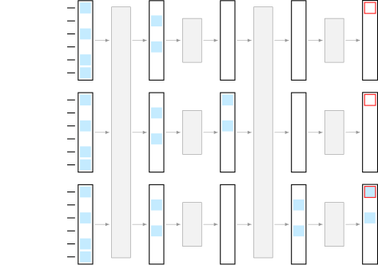
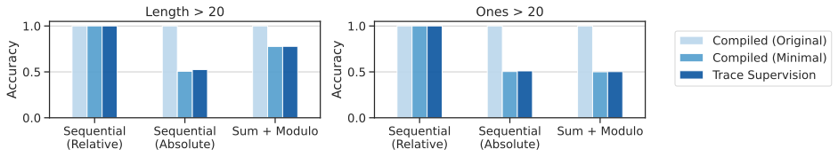
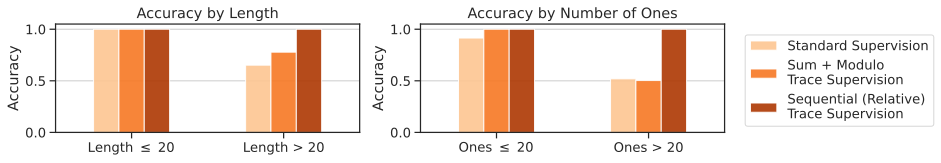
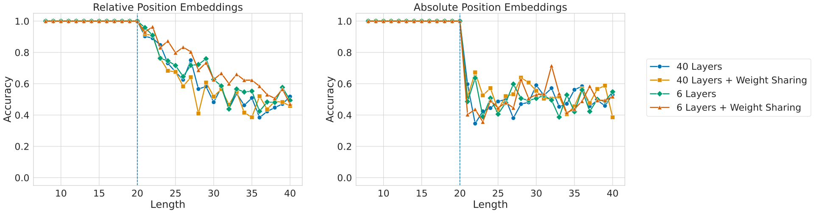
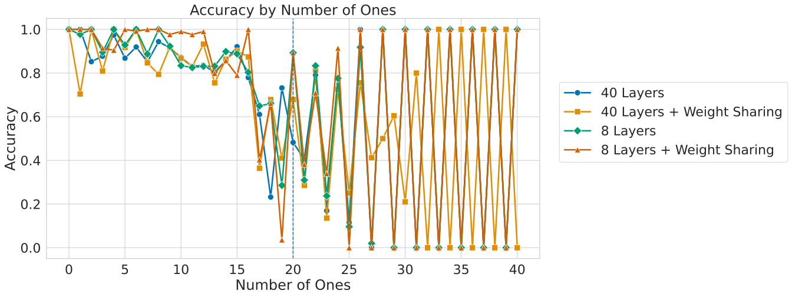
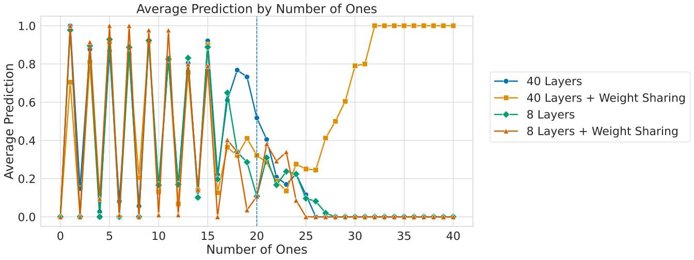
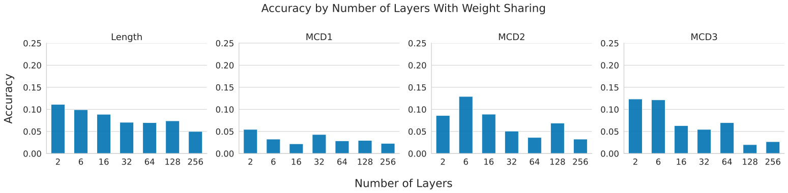

ALTA: Compiler-Based Analysis of Transformers
Abstract摘要
We propose a new programming language called ALTA and a compiler that can map ALTA programs to Transformer weights. ALTA is inspired by RASP, a language proposed by Weiss et al. (2021), and Tracr (Lindner et al., 2023), a compiler from RASP programs to Transformer weights. ALTA complements and extends this prior work, offering the ability to express loops and to compile programs to Universal Transformers, among other advantages. ALTA allows us to constructively show how Transformers can represent length-invariant algorithms for computing parity and addition, as well as a solution to the SCAN benchmark of compositional generalization tasks, without requiring intermediate scratchpad decoding steps. We also propose tools to analyze cases where the expressibility of an algorithm is established, but end-to-end training on a given training set fails to induce behavior consistent with the desired algorithm. To this end, we explore training from ALTA execution traces as a more fine-grained supervision signal. This enables additional experiments and theoretical analyses relating the learnability of various algorithms to data availability and modeling decisions, such as positional encodings. We make the ALTA framework --- language specification, symbolic interpreter, and weight compiler --- available to the community to enable further applications and insights.
我们提出了一种名为 ALTA 的新编程语言，以及一种能够将 ALTA 程序映射为 Transformer 权重的编译器。ALTA 的灵感源自 Weiss et al. (2021) 提出的语言 RASP，以及将 RASP 程序编译为 Transformer 权重的编译器 Tracr (Lindner et al., 2023)。ALTA 补充并扩展了这些已有工作，其优势包括能够表达循环，以及将程序编译为 Universal Transformers 等。借助 ALTA，我们能够以构造性的方式展示 Transformer 如何表示用于计算奇偶性和加法的长度不变算法，以及组合泛化任务基准 SCAN 的一种求解方案，而无须中间草稿解码步骤。我们还提出了一些工具，用于分析算法的可表达性已得到确立，但在给定训练集上进行端到端训练却未能使模型产生符合预期算法的行为的情况。为此，我们探索了利用 ALTA 执行轨迹进行训练，将其作为一种更细粒度的监督信号。这使我们能够开展更多实验和理论分析，将各种算法的可学习性与数据可用性及位置编码等建模决策联系起来。我们向社区公开 ALTA 框架，包括语言规范、符号解释器和权重编译器，以促进进一步的应用并获得新的认识。
Reviewed on OpenReview: https://openreview.net/forum?id=h751wl9xiR
在 OpenReview 上评审：https://openreview.net/forum?id=h751wl9xiR
1 Introduction1 引言
There has been significant discussion and debate about the degree to which Transformers can perform compositional generalization and “System 2” reasoning, prompted by negative results on various evaluations for certain classes of Transformers (Dziri et al., 2023; Qiu et al., 2023; Shaw et al., 2021; Wu et al., 2024; Delétang et al., 2022; Mitchell et al., 2023; Valmeekam et al., 2023, e.g.,). Do such negative results reflect some mutable aspect of how such models were trained, or more fundamental architectural limitations? To better understand the conceptual limitations of Transformers, it would be useful to have an interpretable framework for understanding whether and how Transformers can represent and learn solutions to various tasks of interest. Such a framework could also potentially help elucidate a path towards improving these capabilities.
某些类别的 Transformer 在多种评估中表现不佳，这引发了关于 Transformer 在多大程度上能够进行组合泛化和“系统 2”推理的广泛讨论与争论 (Dziri et al., 2023; Qiu et al., 2023; Shaw et al., 2021; Wu et al., 2024; Delétang et al., 2022; Mitchell et al., 2023; Valmeekam et al., 2023, e.g.,)。这些负面结果反映的是此类模型训练方式中某些可改变的因素，还是更为根本的架构局限？为了更好地理解 Transformer 在概念层面的局限，一个有助于理解 Transformer 能否以及如何表示和学习各种目标任务求解方案的可解释框架将很有价值。这样的框架也可能有助于明确提升这些能力的途径。
We present a new framework for compiling interpretable, symbolic programs to Transformer model weights. The framework is based on a new programming language called ALTA, A Language for Transformer Analysis. It includes an interpreter for symbolically executing ALTA programs, and a compiler for converting ALTA programs to Transformer model weights. ALTA is inspired by prior work that introduced a programming language for Transformers called RASP (Weiss et al., 2021), and prior work that built a compiler from RASP programs to model weights called Tracr (Lindner et al., 2023). ALTA complements and extends this prior work, with two key conceptual differences.
我们提出了一种将可解释的符号程序编译为 Transformer 模型权重的新框架。该框架基于一种名为 ALTA 的新编程语言，即用于 Transformer 分析的语言。它包含一个用于符号化执行 ALTA 程序的解释器，以及一个用于将 ALTA 程序转换为 Transformer 模型权重的编译器。ALTA 的灵感源自两项已有工作：一项引入了面向 Transformer 的编程语言 RASP (Weiss et al., 2021)，另一项构建了将 RASP 程序编译为模型权重的编译器 Tracr (Lindner et al., 2023)。ALTA 补充并扩展了这些已有工作，在概念上存在两个关键差异。
First, ALTA supports dynamic control flow operations such as loops. While Zhou et al. (2023b) showed how RASP programs can be executed within the context of an auto-regressive decoder to implement some forms of loops by leveraging scratchpads (Nye et al., 2021; Wei et al., 2022), ALTA can implicitly support such operations without relying on intermediate decoding steps. This is useful to study because such additional decoding steps can be computationally inefficient and are non-differentiable, typically necessitating additional supervision. ALTA accomplishes this by compiling to Transformers with layer-wise weight sharing. From one perspective, Transformers with weight sharing are simply a special case of standard Transformers. However, they have also been shown to have an inductive bias that improves performance on compositional tasks (Csordás et al., 2021; Ontanon et al., 2022; Yang et al., 2024), which warrants further study. ALTA also supports a conditional computation mechanism, enabling compilation of programs to Universal Transformers (Dehghani et al., 2019), thereby enabling new constructive expressivity results for this class of models.
首先，ALTA 支持循环等动态控制流操作。尽管 Zhou et al. (2023b) 展示了如何在自回归解码器中执行 RASP 程序，利用草稿 (Nye et al., 2021; Wei et al., 2022) 实现某些形式的循环，但 ALTA 能够在不依赖中间解码步骤的情况下隐式支持此类操作。这一点值得研究，因为这些额外的解码步骤可能存在计算效率低下的问题，而且不可微，通常需要额外的监督。ALTA 通过将程序编译为采用层间权重共享的 Transformer 来实现这一点。从一个角度来看，采用权重共享的 Transformer 只是标准 Transformer 的一种特例。然而，已有研究也表明，它们具有能够提升组合任务性能的归纳偏置 (Csordás et al., 2021; Ontanon et al., 2022; Yang et al., 2024)，因此值得进一步研究。ALTA 还支持条件计算机制，能够将程序编译为 Universal Transformers (Dehghani et al., 2019)，从而为这类模型提供新的构造性表达能力结果。
Second, ALTA represents the computation of the MLP sub-layer as a sparse set of transition rules. We show that this enables compilation of complex programs to reasonably sized Transformers. In contrast, Tracr compiles functions over multiple variables expressed in RASP to dense lookup tables encoded in the MLP parameters, which can suffer from combinatorial explosion in the number of possible variable combinations. The ALTA compiler can leverage the sparsity expressed in the set of transition rules to reduce the number of MLP hidden dimensions required, in some cases by many orders of magnitude. Additionally, representing the MLP sub-layer computation as a set of sparse transition rules supports new insights into the generalization potential of MLP layers, and therefore of Transformers, which we explore both theoretically and empirically.
其次，ALTA 将 MLP 子层的计算表示为一组稀疏的状态转移规则。我们表明，这使得复杂程序能够被编译为规模合理的 Transformer。相比之下，Tracr 将以 RASP 表达的多变量函数编译为编码在 MLP 参数中的稠密查找表，这可能因变量组合数量过多而遭遇组合爆炸。ALTA 编译器能够利用状态转移规则集所体现的稀疏性，减少所需的 MLP 隐藏维度数量，在某些情况下可减少多个数量级。此外，将 MLP 子层的计算表示为一组稀疏的状态转移规则，有助于对 MLP 层乃至 Transformer 的泛化潜力形成新的认识，我们从理论和实证两个方面对此进行了探索。
We highlight two primary applications of this framework. First, we show new constructive expressivity results for Transformers and Universal Transformers. This includes showing how Transformers can implement length-invariant algorithms for computing parity and addition. We also demonstrate a shift-reduce parsing algorithm that solves the SCAN (Lake & Baroni, 2018) benchmark of compositional generalization tasks. Second, we provide tools to analyze cases where the expressibility of an algorithm is established, but end-to-end training on a given training set fails to induce behavior consistent with the desired algorithm. Specifically, we propose to use intermediate supervision from ALTA execution traces over a given training set as a learning signal. In some cases, we show this additional supervision is sufficient to learn the desired algorithm, but in other cases failures can highlight limitations of the underlying architecture due to, e.g., the type of positional encoding used. To complement this empirical assessment, we also introduce the analytical notion of whether a program is minimal with respect to a training set, based on whether certain components of a program could be removed without affecting the training set predictions. We prove that if a program is not minimal with respect to a training set, then the compiled model will contain parameters that can be freely changed without affecting any predictions on the training set, i.e. some parameters are under-specified by the training set, even with intermediate supervision. We demonstrate cases where this analysis predicts that test set performance would be under-specified by a given training set, and show agreement with empirical results from training with intermediate supervision. We hope these tools can help provide insights to bridge the gap between expressibility and learnability of algorithms in Transformers.
我们重点介绍该框架的两项主要应用。首先，我们给出了关于 Transformer 和 Universal Transformers 表达能力的新的构造性结果。其中包括展示 Transformer 如何实现用于计算奇偶性和加法的、与长度无关的算法。我们还展示了一种移进-归约解析算法，该算法能够解决组合泛化任务基准 SCAN (Lake & Baroni, 2018)。其次，我们提供了一些工具，用于分析如下情形：某种算法的可表达性已得到确立，但在给定训练集上进行端到端训练却无法诱导出与目标算法一致的行为。具体而言，我们提出将 ALTA 在给定训练集上的执行轨迹所提供的中间监督用作学习信号。我们表明，在某些情况下，这种额外监督足以使模型学会目标算法；但在另一些情况下，失败可能揭示底层架构的局限性，例如由所用位置编码类型导致的局限性。作为对这一实证评估的补充，我们还引入了程序相对于训练集是否具有最小性这一分析概念，其依据是能否在不影响训练集预测结果的情况下移除程序的某些组成部分。我们证明，如果一个程序相对于某个训练集不具有最小性，那么编译后的模型中将包含可自由改变而不影响训练集上任何预测结果的参数，即即使存在中间监督，训练集对某些参数的约束仍然不足。我们展示了若干案例，在这些案例中，该分析预测给定训练集对测试集性能的约束不足，并表明这些预测与采用中间监督进行训练的实证结果一致。我们希望这些工具能够提供有助于弥合 Transformer 中算法可表达性与可学习性之间差距的见解。
Figure 1: Overview of ALTA. We propose a new programming language called ALTA, and a “compiler” that can map ALTA programs to Transformer weights. ALTA is inspired by RASP, a language proposed by Weiss et al. (2021), and Tracr (Lindner et al., 2023), a compiler from RASP programs to Transformer weights. ALTA complements and extends this prior work, offering the ability to express loops and to compile programs to Universal Transformers, among other advantages.
图 1：ALTA 概览。我们提出了一种名为 ALTA 的新编程语言，以及一种能够将 ALTA 程序映射为 Transformer 权重的“编译器”。ALTA 的灵感来自 Weiss et al. (2021) 提出的语言 RASP，以及将 RASP 程序编译为 Transformer 权重的编译器 Tracr (Lindner et al., 2023)。ALTA 补充并扩展了这些已有工作，具有表达循环以及将程序编译为 Universal Transformers 的能力等优势。
In summary, our main contributions are as follows:
综上，我们的主要贡献如下：
• We propose a new programming language called ALTA, and a compiler that can map ALTA programs to Transformer weights. ALTA supports loops and the ability to compile programs to Universal Transformers, among other advantages. (Section 2)
• 我们提出了一种名为 ALTA 的新编程语言，以及一种能够将 ALTA 程序映射为 Transformer 权重的编译器。ALTA 支持循环，并能够将程序编译为 Universal Transformers，还具有其他优势。（第 2 节）
• We use ALTA to demonstrate new constructive expressivity results for Universal Transformers, showing how they can express length invariant algorithms for computing parity and addition, as well as a solution to SCAN. (Sections 3-4)
• 我们使用 ALTA 给出了关于 Universal Transformers 表达能力的新的构造性结果，展示了它们如何表达用于计算奇偶性和加法的、与长度无关的算法，以及一种 SCAN 的解决方案。（第 3-4 节）
• We show how the ALTA framework can be used to analyze the learnability of various algorithms with respect to a training set, both theoretically and empirically via trace supervision. (Sections 3-4)
• 我们展示了如何使用 ALTA 框架，从理论上以及通过轨迹监督开展的实证研究中，分析各种算法相对于某个训练集的可学习性。（第 3-4 节）
• We make the ALTA framework available to the community to support further applications and insights.
• 我们向社区开放 ALTA 框架，以支持进一步的应用和探索。
2 Proposed Framework2 所提出的框架
Here we give an overview of how ALTA programs are specified, their computational model, and how they can be compiled to Transformers. More details on the ALTA program API is in Appendix A.1, and compilation details and examples are in Appendix A.2.
本节概述 ALTA 程序的定义方式、计算模型，以及如何将其编译为 Transformer。有关 ALTA 程序 API 的更多细节见附录 A.1，编译细节和示例见附录 A.2。
2.1 Overview2.1 概览
We give an example of an ALTA program in Figure 2. An ALTA program specification includes three key components: a set of variables, a set of attention heads, and a “MLP function”. We explain each of these below in the context of how they affect the execution of an ALTA program. The computational model of an ALTA program aligns closely with the computational model of a Transformer (Vaswani et al., 2017). In this paper we focus on encoder-only Transformers for simplicity. However, we note that ALTA programs can alternatively be executed in the context of a decoder-only Transformer. This involves adding a causal attention mask and outer auto-regressive decoding loop, but does not otherwise affect the definition and compilation of ALTA programs (see Appendix A.3). We also focus on Transformers with layer-wise weight sharing, i.e. where all attention and MLP parameters are shared across layers. We also support Universal Transformers which have an input-dependent number of layers.
我们在图 2 中给出了一个 ALTA 程序示例。ALTA 程序的定义包含三个关键组成部分：一组变量、一组注意力头和一个“MLP 函数”。下文将结合这些组成部分对 ALTA 程序执行过程的影响，逐一加以说明。ALTA 程序的计算模型与 Transformer (Vaswani et al., 2017) 的计算模型高度一致。为简便起见，本文重点讨论仅编码器 Transformer。不过，我们指出，ALTA 程序也可以在仅解码器 Transformer 中执行。这需要添加因果注意力掩码和外层自回归解码循环，但除此之外不会影响 ALTA 程序的定义和编译（见附录 A.3）。我们还重点讨论采用层间权重共享的 Transformer，即所有注意力参数和 MLP 参数均在各层之间共享。我们也支持层数随输入而变化的 Universal Transformers。
Figure 2: Example ALTA Program. The parity program computes whether a given binary sequence contains an even or odd number of “1” tokens. For an input of length $N$, the parity variable of the final input element will equal the parity of the overall sequence after $N-1$ layers, and computation will halt. The program specification contains all of the necessary information to compile the program to a Transformer.
图 2：ALTA 程序示例。该奇偶性程序计算给定二进制序列中“1”词元的数量是偶数还是奇数。对于长度为 $N$ 的输入，经过 $N-1$ 层后，最后一个输入元素的奇偶性变量将等于整个序列的奇偶性，随后计算终止。程序定义包含将该程序编译为 Transformer 所需的全部信息。
vars = {
# Initialize parity with input.
"parity": var(range=2, input_init_fn=lambda x: x),
# Whether parity has been updated.
"done": var(range=2, position_init_fn=lambda x: x == 0),
# Position of current element.
"idx": var(range=NUM_POS, position_init_fn=lambda x: x),
# Index of preceding element.
"idx_left": var(range=NUM_POS, position_init_fn=lambda x: max(0, x - 1),
}
attention_heads = {
# Values of ‘parity’ and ‘done’ for preceding element.
"parity_left": qkv("idx_left", "idx", "parity")
"done_left": qkv("idx_left", "idx", "done")
}
def ffn_fn(z):
if not z["done"] and z["done_left"]:
# Update parity based on parity of preceding element.
z["parity"] = z["parity_left"] ^ z["parity"]
z["done"] = 1
return program_spec(vars=vars, heads=attention_heads, ffn_fn=ffn_fn,
output="parity", halt_spec=halt_spec("done", 1),
input_range=2, position_range=NUM_POS)Notably, not all types of computation expressible by Transformers can be represented in ALTA, i.e., the range of the ALTA compiler is a relatively small subspace of all possible parameter values. For example, ALTA has limited support for numeric computation and does not support modeling of probabilistic output distributions. However, ALTA provides broad support for implementing various types of deterministic algorithms.
值得注意的是，并非所有可由 Transformer 表达的计算类型都能在 ALTA 中表示，即 ALTA 编译器的值域是所有可能参数值构成的空间中一个相对较小的子空间。例如，ALTA 对数值计算的支持有限，且不支持对概率输出分布进行建模。然而，ALTA 广泛支持各类确定性算法的实现。
The ALTA framework includes an interpreter, which symbolically executes a program, and a compiler which compiles programs to Transformer weights. The input to an ALTA program $P\in\mathcal{P}$ is a sequence of integers inputs ($\in\mathcal{X}$) and the output is a sequence of integers of equal length ($\in\mathcal{Y}$). The interpreter implements a function $I:\mathcal{P}\times\mathcal{X}\rightarrow\mathcal{Y}$. The interpreter is useful for development and understanding the computational model in an abstract way. The compiler implements a function $C$ such that $\theta=C(P)$ where $T(\mathbf{x},\theta)\approx I(P,\mathbf{x})$ for all $\mathbf{x}\in\mathcal{X}$ and where $T$ denotes the output of a Transformer encoder. The equality holds up to the limits of numerical approximation for well formed programs.
ALTA 框架包含一个以符号方式执行程序的解释器，以及一个将程序编译为 Transformer 权重的编译器。ALTA 程序 $P\in\mathcal{P}$ 的输入是一个整数序列（$\in\mathcal{X}$），输出是一个等长的整数序列（$\in\mathcal{Y}$）。解释器实现了函数 $I:\mathcal{P}\times\mathcal{X}\rightarrow\mathcal{Y}$。解释器有助于程序开发，以及从抽象层面理解计算模型。编译器实现了函数 $C$，使得 $\theta=C(P)$，其中，对于所有 $\mathbf{x}\in\mathcal{X}$，均有 $T(\mathbf{x},\theta)\approx I(P,\mathbf{x})$，且 $T$ 表示 Transformer 编码器的输出。对于格式良好的程序，在数值近似的误差范围内，该等式成立。
2.2 Variables2.2 变量
Similarly to Lindner et al. (2023), we adopt the residual stream view of Transformers as proposed by Elhage et al. (2021). In this view, the attention and MLP sub-layers within the Transformer read and write to the residual stream, which is represented by the activations between these sub-layers. While Transformers represent the residual stream for each element as a vector, our interpreter represents the residual stream for each element symbolically as a mapping of variables to values. The residual stream of the interpreter for the parity program of Figure 2 is shown in Figure 3. The set of variables and their possible values are specified by the program. There are three kinds of variables in ALTA: categorical variables have bounded integer values, numerical variables have real-valued values, and set variables have sets of bounded integer values. Variables representing the output of attention heads can also take on a null or undefined value (see §2.3). We establish a bijective mapping between variable assignments and activation vectors. Each possible value of a categorical variable is assigned a standard basis vector in the activation space, i.e., a one-hot encoding. Set variables are similarly represented, but with a multi-hot encoding. The scalar value of a numerical variable is directly represented in a single dimension. This mapping can be seen as establishing an approximate isomorphism with respect to the sub-layer operations of the interpreter and those of a compiled Transformer.
与 Lindner et al. (2023) 类似，我们采用 Elhage et al. (2021) 提出的 Transformer 残差流视角。在这一视角下，Transformer 内部的注意力子层和 MLP 子层对残差流进行读写，而残差流由这些子层之间的激活表示。Transformer 将每个元素的残差流表示为一个向量，而我们的解释器则以符号方式将每个元素的残差流表示为从变量到值的映射。图 3 展示了图 2 中奇偶性程序在解释器中的残差流。变量集合及其可能的取值由程序指定。ALTA 中有三类变量：类别变量的取值为有界整数，数值变量的取值为实数，集合变量的取值为有界整数的集合。表示注意力头输出的变量还可以取空值或未定义值（见第 2.3 节）。我们在变量赋值与激活向量之间建立了双射。类别变量的每个可能取值都对应于激活空间中的一个标准基向量，即独热编码。集合变量采用类似的表示方式，但使用多热编码。数值变量的标量值直接表示在单个维度中。这一映射可视为在解释器的子层运算与编译后的 Transformer 的子层运算之间建立了近似同构。

Figure 3: Visualization of the interpreter’s symbolic residual stream for the parity program shown in Figure 2, for the input sequence $[1,0,1]$. The computed output sequence after the second layer is $[1,1,0]$, which corresponds to the parity of the input sequence up to the current position, with the final value containing the parity of the entire input sequence. Output values are outlined in red, and values that have changed are highlighted in blue.
图 3：对于输入序列 $[1,0,1]$，图 2 所示奇偶性程序在解释器中的符号残差流的可视化。第二层之后计算得到的输出序列为 $[1,1,0]$，对应于输入序列截至当前位置的奇偶性，其中最后一个值包含整个输入序列的奇偶性。输出值以红色边框标出，发生变化的值以蓝色高亮显示。
2.3 Execution2.3 执行
In this section, we explain the execution of an ALTA program in the interpreter, and summarize how each operation is encoded in a compiled Transformer, with more details in Appendix A. We denote the value of variable foo for element $i$ at sub-layer $k$ as $z^{k}_{\langle i,\texttt{foo}\rangle}$. Let $z^{k}_{\langle:,\texttt{foo}\rangle}$ denote the vector of values for foo across all elements at sub-layer $k$.
本节介绍 ALTA 程序在解释器中的执行过程，并概述如何在编译后的 Transformer 中对各项操作进行编码，更多细节见附录 A。我们将元素 $i$ 在子层 $k$ 处的变量 foo 的值记为 $z^{k}_{\langle i,\texttt{foo}\rangle}$。令 $z^{k}_{\langle:,\texttt{foo}\rangle}$ 表示子层 $k$ 处所有元素的 foo 值构成的向量。
Initialization初始化
Given an input sequence $\mathbf{x}=\langle x_{1},x_{2},\cdots,x_{|\mathbf{x}|}\rangle$, we initialize every variable at every position. Specifically, for a variable foo, we initialize $z^{0}_{\langle i,\texttt{foo}\rangle}$ as a function of $x_{i}$, a function of the positional index $i$, or as a constant, based on how the initialization for foo is specified in the program. This operation is encoded in the parameters of the Transformer’s embedding tables for input and position values. The number of possible input values and possible positional indexes must be specified to the compiler. Alternatively, positional embeddings can be omitted if no variable is initialized as a function of position.
给定输入序列 $\mathbf{x}=\langle x_{1},x_{2},\cdots,x_{|\mathbf{x}|}\rangle$，我们对每个位置的每个变量进行初始化。具体而言，对于变量 foo，我们根据程序中指定的 foo 初始化方式，将 $z^{0}_{\langle i,\texttt{foo}\rangle}$ 初始化为 $x_{i}$ 的函数、位置索引 $i$ 的函数或常量。该操作编码在 Transformer 用于输入值和位置值的嵌入表参数中。必须向编译器指定可能的输入值数量和可能的位置索引数量。或者，如果没有变量被初始化为位置的函数，则可以省略位置嵌入。
Encoder Loop编码器循环
We then proceed to iteratively execute the self-attention sub-layer and the MLP sub-layer, which share parameters across all layers. A dynamic halting criterion, as proposed for the Univeral Transformer (Dehghani et al., 2019), can optionally be specified by the program, which consists of specifying which variable and corresponding value indicate that computation has completed for a given element. Alternatively, a maximum number of layers can be specified as an argument to the interpreter or when running a compiled Transformer. Similarly to Tracr (Lindner et al., 2023), our compiled Transformers do not include layer normalization operations, which simplifies compilation. Otherwise, the self-attention and MLP sub-layers align with those of a standard Transformer, and are described below.
随后，我们迭代执行自注意力子层和 MLP 子层，二者的参数均在所有层之间共享。程序可以选择指定 Univeral Transformer (Dehghani et al., 2019) 中提出的动态停机准则，具体方式是指定用于指示某个给定元素的计算已完成的变量及其对应值。也可以将最大层数作为参数传递给解释器，或在运行编译后的 Transformer 时指定最大层数。与 Tracr (Lindner et al., 2023) 类似，我们编译得到的 Transformer 不包含层归一化操作，从而简化了编译过程。除此之外，自注意力子层和 MLP 子层均与标准 Transformer 中的相应子层一致，下文将对其进行介绍。
Self-Attention自注意力
For each attention head, the interpreter computes a selection matrix, containing a “weight” for every pair of inputs, and uses this to aggregate information across positions. A simplifying assumption of ALTA, similarly to RASP, is that this matrix is binary. Attention heads in ALTA are specified by pointers to query, key, value, and output variables. Each head must have a unique output variable. The query variable must be a categorical or set variable, the key variable must be categorical, and the value and output variables must both be either categorical or numerical. For each attention sub-layer $k$, every attention head updates the value of some output variable:
对于每个注意力头，解释器计算一个选择矩阵，其中包含每对输入的一个“权重”，并利用该矩阵聚合不同位置的信息。与 RASP 类似，ALTA 的一个简化假设是该矩阵为二值矩阵。ALTA 中的注意力头通过指向 query、key、value 和输出变量的指针来指定。每个头都必须具有唯一的输出变量。query 变量必须是类别型或集合型变量，key 变量必须是类别型变量，而 value 变量和输出变量均必须是类别型或数值型变量。对于每个注意力子层 $k$，每个注意力头都会更新某个输出变量的值：
where query, key, value, and out are the variable names specified by the given attention head. The definition of select is similar to that used by RASP. The main difference is that we do not allow specifying a custom binary predicate as an argument to select, which simplifies compilation. The select operation returns a square selection matrix, $S_{i,j}$, where $S_{i,j}=\llbracket z^{k}_{\langle i,\texttt{{key}}\rangle}=z^{k}_{\langle j,\texttt{{query}}\rangle}\rrbracket$ if query is categorical and $S_{i,j}=\llbracket z^{k}_{\langle i,\texttt{{key}}\rangle}\in z^{k}_{\langle j,\texttt{{query}}\rangle}\rrbracket$ if query is set-valued. The aggregate operation returns a new sequence of values $z^{k+1}_{\langle:,\texttt{{out}}\rangle}$. Each value $z^{k+1}_{\langle i,\texttt{{out}}\rangle}$ is determined by aggregating over the set of selected values, $\{z^{k}_{\langle j,\texttt{{value}}\rangle}|S_{i,j}=1\}$ specified by the selection matrix row $S_{i,:}$. When value is numeric, aggregate is defined the same as in RASP, outputting the average of the selected values, and will be undefined if no value is selected. When value is categorical, the output will be undefined if there is not exactly one value selected. The interpreter will raise an exception if any undefined variable is used as input to any operation in subsequent layers, as the encoding of an undefined variable is not well specified in a compiled model.
其中，query、key、value 和 out 是给定注意力头所指定的变量名。select 的定义与 RASP 中使用的定义类似。主要区别在于，我们不允许将自定义二元谓词指定为 select 的参数，从而简化编译过程。select 操作返回一个方形选择矩阵 $S_{i,j}$；当 query 为类别型时，$S_{i,j}=\llbracket z^{k}_{\langle i,\texttt{{key}}\rangle}=z^{k}_{\langle j,\texttt{{query}}\rangle}\rrbracket$；当 query 为集合型时，$S_{i,j}=\llbracket z^{k}_{\langle i,\texttt{{key}}\rangle}\in z^{k}_{\langle j,\texttt{{query}}\rangle}\rrbracket$。aggregate 操作返回一个新的值序列 $z^{k+1}_{\langle:,\texttt{{out}}\rangle}$。每个值 $z^{k+1}_{\langle i,\texttt{{out}}\rangle}$ 通过对选择矩阵的行 $S_{i,:}$ 所指定的选中值集合 $\{z^{k}_{\langle j,\texttt{{value}}\rangle}|S_{i,j}=1\}$ 进行聚合来确定。当 value 为数值型时，aggregate 的定义与 RASP 中相同，输出选中值的平均值；若未选中任何值，则输出未定义。当 value 为类别型时，若选中的值的数量不恰好为一个，则输出未定义。如果任何未定义的变量被用作后续层中任何操作的输入，解释器都会抛出异常，因为在编译后的模型中，未定义变量的编码并没有明确规定。
These operations can be encoded in the parameters of the query, key, value, and output projections for a given attention head. A scalar hyperparameter controls the degree to which the softmax operation approximates generating a binary selection matrix. Each attention sub-layer is followed by a residual connection. We also support the option of using relative position representations (Shaw et al., 2018) by specifying a mask of relative positions that each attention head can attend to, which is applied to the selection matrix following the select operation. This binary mask is compiled to relative position biases using the parameterization of Raffel et al. (2020).
这些操作可以编码到给定注意力头的 query、key、value 和输出投影的参数中。一个标量超参数控制 softmax 操作生成的结果逼近二值选择矩阵的程度。每个注意力子层之后都有一个残差连接。我们还支持通过指定每个注意力头可以关注的相对位置掩码，来选择使用相对位置表示 (Shaw et al., 2018)；该掩码在 select 操作之后应用于选择矩阵。此二值掩码采用 Raffel et al. (2020) 的参数化形式编译为相对位置偏置。
MLP FunctionMLP 函数
The MLP sub-layer implements a mapping from a set of variable assignments to a new set of variable assignments, which is applied at every element. For compilation and analysis purposes, ALTA programs internally represent this operation as a set of transition rules, which can be interpreted as logical implications with conjunctive antecedents. For example, here is one of the transition rules for the example program in Figure 2:
MLP 子层实现从一组变量赋值到一组新变量赋值的映射，并将该映射应用于每个元素。出于编译和分析的需要，ALTA 程序在内部将此操作表示为一组转移规则，这些规则可以解释为前件为合取式的逻辑蕴含。例如，下面是图 2 中示例程序的一条转移规则：
When the antecedent of a rule is satisfied by the MLP input (i.e., all of the conditions hold with respect to the variable assignments at the MLP input), then the consequent determines the value of some output variable for the next sub-layer. By construction, for a given output variable, there should never be more than one rule satisfied by the MLP input. If no rule is satisfied, then the value of that output variable is unchanged from the MLP input. We also include transition rules that ensure that every attention output variable is set to a null value so that it can be updated by the next attention sub-layer without conflicting with the residual connection. No attention output variable can otherwise be the output variable of any transition rule.
当 MLP 输入满足某条规则的前件时（即 MLP 输入处的变量赋值满足所有条件），该规则的后件便确定下一个子层中某个输出变量的值。按照构造方式，对于给定的输出变量，MLP 输入所满足的规则绝不应超过一条。如果没有任何规则得到满足，则该输出变量的值相较于 MLP 输入保持不变。我们还包含一些转移规则，确保每个注意力输出变量都被设为空值，以便下一个注意力子层能够更新该变量，而不与残差连接发生冲突。除此之外，任何注意力输出变量都不能作为任何转移规则的输出变量。
The set of transition rules can be specified in two ways when defining ALTA programs. First, as shown in Figure 2, one can simply write a Python function with the signature shown. The set of transition rules can then be determined by executing this function for every possible set of variable assignments. In cases where this is not feasible, or where it is desirable to have more control over the set of transition rules, we offer an alternative API for specifying the set of transition rules more directly (see §A.1). In either case, the representation of numerical variable values in the antecedent of a transition rule is based on the set of discrete buckets specified for the given variable. Leveraging the sparsity represented in a set transition rules rather than compiling a lookup table consisting of all variable combinations can significantly reduce the number of MLP dimensions required.
定义 ALTA 程序时，可以通过两种方式指定转换规则集。首先，如图 2 所示，可以直接编写一个具有所示签名的 Python 函数。随后，通过对每一种可能的变量赋值组合执行该函数，即可确定转换规则集。当这种方式不可行，或希望对转换规则集进行更多控制时，我们提供了另一种 API，用于更直接地指定转换规则集（见 §A.1）。无论采用哪种方式，转换规则前件中数值变量值的表示均基于为该变量指定的离散分桶集合。利用转换规则集中体现的稀疏性，而非编译包含所有变量组合的查找表，可以显著减少所需的 MLP 维度数。
The set of transition rules is represented in the parameters of the MLP layers. We generate a 4-layer MLP with clipped ReLU activations. The first 2 layers are only responsible for converting numerical and set variables into a one-hot representation, representing the possible values of these variables. For numerical variables, these correspond to a specified set of discrete buckets. Note that if a program contains only categorical variables, these 2 layers could be omitted. The final 2 layers of the MLP are based on the set of transition rules. The parameters of these layers are compiled such that the hidden activations are a binary vector where each value corresponds to whether a particular transition rule was satisfied by the MLP input. Each row of the first matrix is a function of the antecedent of a particular rule, and each column of the second matrix is a function of the consequent of a particular rule. Each MLP sub-layer is followed by a residual connection.
转换规则集表示在 MLP 各层的参数中。我们生成一个采用截断 ReLU 激活的 4 层 MLP。前 2 层仅负责将数值变量和集合变量转换为独热表示，以表示这些变量的可能取值。对于数值变量，这些取值对应于指定的离散分桶集合。注意，如果程序仅包含类别变量，则可以省略这 2 层。MLP 的最后 2 层基于转换规则集构建。通过编译设置这些层的参数，使隐藏激活成为一个二值向量，其中每个值表示 MLP 输入是否满足某一特定转换规则。第一个矩阵的每一行由某一特定规则的前件确定，第二个矩阵的每一列由某一特定规则的后件确定。每个 MLP 子层后均接有一个残差连接。
Output输出
Each ALTA program specifies an output variable, which must be categorical. If execution terminates after $k$ sub-layers, and the output variable is output, then the program returns $z^{k}_{\langle:,\texttt{{output}}\rangle}$. Selecting the subset of dimensions associated with the output variable is encoded in the parameters of the output projection. The Transformer then computes a softmax over this one-hot vector, and outputs the argmax.
每个 ALTA 程序都指定一个输出变量，该变量必须是类别变量。如果执行在 $k$ 个子层后终止，且输出变量为 output，则程序返回 $z^{k}_{\langle:,\texttt{{output}}\rangle}$。对与输出变量关联的维度子集的选择编码在输出投影的参数中。随后，Transformer 对该独热向量计算 softmax，并输出 argmax。
3 Expressibility and Learnability3 表达能力与可学习性
While there are many potential applications for ALTA, we focus on two applications in this paper: new constructive expressivity demonstrations, and analysis of whether such algorithms are learnable given a particular training set, with varying amounts of supervision. We give an overview of these applications and our proposed analytical tools here, with results in Section 4.
尽管 ALTA 存在许多潜在应用，本文重点关注两项应用：新的构造性表达能力证明，以及在给定特定训练集和不同监督量的情况下，分析此类算法是否可学习。我们在此概述这些应用及所提出的分析工具，结果见第 4 节。
3.1 Expressibility3.1 表达能力
There has been considerable interest in establishing the theoretical expressivity of various classes of Transformers (Pérez et al., 2021; Chiang et al., 2023; Yun et al., 2020; Feng et al., 2023; Merrill & Sabharwal, 2024). However, such theoretical works often do not demonstrate specific constructions of how Transformers can express algorithms of interest with limited resources, which can require manually specifying weight matrices. Tools like RASP, Tracr, and ALTA make it easier to construct such constructive demonstrations. For example, RASP and its extensions have supported many new expressivity results for Transformers (Zhou et al., 2023b; Angluin et al., 2023; Kazemnejad et al., 2024; Yang & Chiang, 2024; Strobl et al., 2024; Friedman et al., 2024).
确定各类 Transformer 的理论表达能力已受到广泛关注 (Pérez et al., 2021; Chiang et al., 2023; Yun et al., 2020; Feng et al., 2023; Merrill & Sabharwal, 2024)。然而，此类理论研究往往未给出具体构造，以展示 Transformer 如何在资源有限的条件下表达所关注的算法，而这可能需要手动指定权重矩阵。RASP、Tracr 和 ALTA 等工具使这类构造性证明更易实现。例如，RASP 及其扩展已支持得出许多关于 Transformer 表达能力的新结果 (Zhou et al., 2023b; Angluin et al., 2023; Kazemnejad et al., 2024; Yang & Chiang, 2024; Strobl et al., 2024; Friedman et al., 2024)。
Much of the recent work on the expressivity of Transformers has focused on Transformer decoders that can execute an input-dependent number of intermediate decoding steps before producing a final output (Pérez et al., 2021; Feng et al., 2023; Merrill & Sabharwal, 2024; Zhou et al., 2023b). While such intermediate decoding steps have been empirically successful at improving sequential reasoning capabilities (Nye et al., 2021; Wei et al., 2022), this typically requires additional supervision during training (Pfau et al., 2024). Additionally, leveraging such intermediate decoding steps may not be the most computationally efficient way to represent certain algorithms. Therefore, it is interesting to study whether and how Transformers can represent various algorithms without relying on such intermediate decoding steps, as an alternative or complementary approach. We use ALTA to provide new constructive expressibility results for Universal Transformer encoders for various resource bounds, detailed in Section 4. When considering a finite limit on the number of layers, such results also hold as a special case of standard Transformer encoders.
近期关于 Transformer 表达能力的大量研究聚焦于 Transformer 解码器，这类解码器可以在生成最终输出之前，执行数量取决于输入的中间解码步骤 (Pérez et al., 2021; Feng et al., 2023; Merrill & Sabharwal, 2024; Zhou et al., 2023b)。尽管实证研究表明，此类中间解码步骤能够有效提升序列推理能力 (Nye et al., 2021; Wei et al., 2022)，但这通常需要在训练期间提供额外监督 (Pfau et al., 2024)。此外，利用此类中间解码步骤来表示某些算法，在计算效率上可能并非最优。因此，作为一种替代或补充方法，研究 Transformer 能否以及如何在不依赖此类中间解码步骤的情况下表示各种算法，具有研究价值。我们使用 ALTA，针对不同的资源界限，为 Universal Transformer 编码器给出了新的构造性表达能力结果，详见第 4 节。当层数存在有限上限时，这些结果也适用于作为特殊情形的标准 Transformer 编码器。
3.2 Learnability3.2 可学习性
In many cases, we can establish that an algorithm is expressible by a given class of Transformers, but training a model from this class on input and output examples of a particular algorithm can fail to induce a model that generalizes outside of the training set. It can be difficult to diagnose the reason for such failures, and to determine what to change regarding the architecture, training objective, or training data to improve generalization. We provide two tools to help bridge the gap between expressibility and learnability, which we discuss next.
在许多情况下，我们可以证明某个算法能够由给定类别的 Transformer 表达，但使用特定算法的输入和输出示例来训练该类别中的模型，可能无法得到能够泛化到训练集之外的模型。此类失败的原因可能难以诊断，也可能难以确定应如何调整架构、训练目标或训练数据以改善泛化。我们提供了两种工具，以帮助弥合可表达性与可学习性之间的差距，下面将对此进行讨论。
Trace Supervision轨迹监督
We propose to use intermediate supervision from ALTA execution traces over a given training set as a learning signal. Given a program $P$ and a set of model inputs $\mathcal{X}$, we run $P$ for every input in $\mathcal{X}$, and extract the variable assignments at the input and output of every sub-layer, for every position. These traces can be used to derive trace supervision, which encourages the behavior of the model to align with that of the program being used to provide supervision. In our experiments, for simplicity, we focus on training the MLP parameters to reconstruct the desired output vector for each input vector, and compile the remaining parameters. In some cases, we show this additional supervision is sufficient to learn the desired algorithm, but in other cases failures can highlight limitations of the underlying architecture due to, e.g., the type of positional encoding used. We report results on the parity task in §4, and details of the training procedure in Appendix C.1.
我们提出，利用给定训练集上的 ALTA 执行轨迹所提供的中间监督作为学习信号。给定程序 $P$ 和模型输入集合 $\mathcal{X}$，我们对 $\mathcal{X}$ 中的每个输入运行 $P$，并提取每个位置在每个子层输入端和输出端的变量赋值。这些轨迹可用于构建轨迹监督，促使模型的行为与用于提供监督的程序的行为保持一致。在实验中，为简单起见，我们重点训练 MLP 参数，以针对每个输入向量重建期望的输出向量，并通过编译得到其余参数。我们表明，在某些情况下，这种额外监督足以使模型学会目标算法；但在其他情况下，失败可能揭示底层架构的局限性，例如所用位置编码类型带来的局限性。我们在第 4 节报告奇偶校验任务的结果，并在附录 C.1 中介绍训练过程的细节。
Theoretical Analysis理论分析
To complement the empirical results from trace supervision, we also take a step towards analytically characterizing the conditions under which any particular ALTA program can be learned from a given training set. To this end, we introduce criteria for determining whether a program is minimal with respect to a training set, which depends on whether certain components of a program could be removed without affecting the training set predictions.
为补充轨迹监督的实证结果，我们还进一步尝试通过解析方法刻画从给定训练集中学会任一特定 ALTA 程序所需的条件。为此，我们引入了判断程序相对于训练集是否为极小程序的准则，其依据是能否在不影响训练集预测结果的情况下移除程序的某些组成部分。
Here we give an overview of our theoretical analysis, which is detailed in Appendix B. We focus on the set of MLP parameters, and consider a setting similar to that of training with trace supervision, where we derive a set of MLP inputs, $\mathcal{D}$, corresponding to running a given program over some set of model inputs. The MLP parameters are specified by the set of transition rules, $\mathcal{R}$, in the given program. A rule set is minimal with respect to a set of MLP inputs, $\mathcal{D}$, if it is not possible to remove any rule or any constraint from any rule without changing the program output on some input in $\mathcal{D}$. Similarly to training with trace supervison, we consider a reconstruction loss over $\mathcal{D}$ that quantifies how well the MLP outputs correspond to the outputs specified by $\mathcal{R}$. Our results are with respect to a training objective that combines this reconstruction loss with a regularizer on the parameter weights. We show that:
这里概述我们的理论分析，详细内容见附录 B。我们重点关注 MLP 参数集合，并考虑一种与采用轨迹监督进行训练类似的设定：在一组模型输入上运行给定程序，由此得到 MLP 输入集合 $\mathcal{D}$。MLP 参数由给定程序中的转移规则集合 $\mathcal{R}$ 确定。如果移除任何一条规则或任何一条规则中的任何一个约束，都会改变程序在 $\mathcal{D}$ 中某个输入上的输出，则称该规则集相对于 MLP 输入集合 $\mathcal{D}$ 是极小的。与采用轨迹监督进行训练类似，我们考虑定义在 $\mathcal{D}$ 上的重建损失，用于量化 MLP 输出与 $\mathcal{R}$ 所指定输出的吻合程度。我们的结果针对的是将该重建损失与参数权重正则项相结合的训练目标。我们证明：
Theorem 1 (Informal).定理 1（非正式表述）。
If the rule set $\mathcal{R}$ is not minimal with respect to $\mathcal{D}$, then the compiled MLP parameters are not a strict coordinate-wise local optimum of the regularized reconstruction loss.
如果规则集 $\mathcal{R}$ 相对于 $\mathcal{D}$ 不是极小的，则编译得到的 MLP 参数不是正则化重建损失的严格逐坐标局部最优点。
Theorem 2 (Informal).定理 2（非正式表述）。
If the rule set $\mathcal{R}$ is minimal with respect to $\mathcal{D}$, then the compiled MLP parameters are a strict coordinate-wise local optimum of the regularized reconstruction loss.
如果规则集 $\mathcal{R}$ 相对于 $\mathcal{D}$ 是极小的，则编译得到的 MLP 参数是正则化重建损失的严格逐坐标局部最优点。
Therefore, when the minimality conditions are met, we can conclude that there exists a local optimum point with respect to the training objective that corresponds to the behavior of the given program, although we are not guaranteed to find this point during training. See Theorems 1 and 2 in Appendix B for the formal statements and proofs.
因此，当满足极小性条件时，我们可以断定，该训练目标存在一个与给定程序行为相对应的局部最优点，但无法保证在训练过程中找到这一点。正式表述及证明见附录 B 中的定理 1 和定理 2。
We can apply this theory to analyze a particular program, training set, and test set. We can determine a minimal version of the program with respect to the training set by removing aspects of the program that do not change any predictions on the training set (Appendix C.2 describes the exact procedure used). We can then assess whether this minimal version generalizes, i.e., has the same behavior as the original program on a test set. This analytical test does not require training models or selecting hyperparameters, and provides an interpretable assessment of the potentially underspecified aspects of a program. Our theoretical analysis suggests that a Transformer trained with trace supervision from a program on a training set is more likely to generalize if the minimal version of the program generalizes, and we evaluate this in Section 4.
我们可以应用这一理论来分析特定的程序、训练集和测试集。通过移除程序中不会改变训练集上任何预测结果的部分，我们可以确定该程序相对于训练集的一个极小版本（附录 C.2 描述了所用的具体过程）。随后，我们可以评估这个极小版本是否具有泛化能力，即其在测试集上的行为是否与原始程序相同。这种解析检验无需训练模型或选择超参数，并能对程序中可能未被充分确定的部分给出可解释的评估。我们的理论分析表明，如果程序的极小版本具有泛化能力，那么在训练集上利用该程序提供的轨迹监督训练得到的 Transformer 更有可能具有泛化能力，我们在第 4 节对此进行了评估。
Notably, this notion of minimality can also help generalize some of the ideas introduced by Zhou et al. (2023b) with respect to RASP. As Zhou et al. (2023b) were interested in understanding length generalization, they proposed some restrictions on RASP programs that would otherwise be “difficult to learn”. First, they proposed restrictions on programs containing certain operations over positional indices. Second, they excluded certain programs from consideration on an intuitive basis, such as a program for solving the parity task using sum and modulo operations. In both cases, such programs would not be minimal with respect to some finite length training set, according to our proposed criteria, as we show in Section 4.
值得注意的是，这一最小性概念还有助于推广 Zhou et al. (2023b) 针对 RASP 提出的一些思想。由于 Zhou et al. (2023b) 关注对长度泛化的理解，他们对那些可能“难以学习”的 RASP 程序提出了一些限制。首先，他们提议限制包含某些位置索引运算的程序。其次，他们基于直觉将某些程序排除在考虑范围之外，例如使用求和与取模运算来解决奇偶性任务的程序。根据我们提出的判据，在这两种情况下，此类程序相对于某个有限长度的训练集都不是最小的，我们将在第 4 节中展示这一点。
4 Experiments and Analysis4 实验与分析
We detail experiments and analysis on several tasks, with further details and results in Appendix D.
我们详细介绍了在若干任务上的实验与分析，更多细节和结果见附录 D。
4.1 Parity4.1 奇偶性

Figure 4: Generalization by length and number of ones for different parity programs in various settings. The training set consists of inputs of up to length 20 (and therefore up to 20 “ones”) while the test set consists of inputs with lengths 21 to 40. While the original compiled models have perfect accuracy, the minimal versions of the programs exhibit different generalization behaviors and closely mirror the behaviors of the trace supervision experiments.
图 4：不同设置下各奇偶性程序按长度和 1 的数量划分的泛化表现。训练集由长度不超过 20 的输入组成（因此最多包含 20 个“1”），而测试集由长度为 21 至 40 的输入组成。尽管原始编译模型的准确率均达到满分，但各程序的最小版本表现出不同的泛化行为，并且与轨迹监督实验中的行为高度一致。
The parity task requires the model to compute whether a binary sequence contains an even or odd number of ones. The ability of transformers to learn parity has been studied extensively (Hahn, 2020), particularly the degree to which they exhibit length generalization (Bhattamishra et al., 2020; Chiang & Cholak, 2022; Ruoss et al., 2023; Delétang et al., 2022). Empirically successful solutions have relied on scratchpads (Anil et al., 2022; Zhou et al., 2022). Zhou et al. (2023b) used a variant of RASP to investigate why Transformers struggle with length generalization on parity and why scratchpads help.
奇偶性任务要求模型判断一个二进制序列中 1 的数量是偶数还是奇数。Transformer 学习奇偶性的能力已得到广泛研究 (Hahn, 2020)，其中尤其关注其表现出长度泛化的程度 (Bhattamishra et al., 2020; Chiang & Cholak, 2022; Ruoss et al., 2023; Delétang et al., 2022)。在实验中取得成功的解决方案依赖于草稿纸 (Anil et al., 2022; Zhou et al., 2022)。Zhou et al. (2023b) 使用 RASP 的一种变体，研究了为何 Transformer 在奇偶性任务上难以实现长度泛化，以及为何草稿纸能够提供帮助。
We study three ALTA programs for computing parity detailed in Appendix D.1. First, the Sequential (Absolute) program computes parity by iterating through each position (one per layer), flipping a parity bit every time a one is encountered. While this program uses absolute positions to enable propagating information to neighboring tokens, we also consider a Sequential (Relative) version that uses relative positions instead. Finally, the Sum + Modulo program computes parity in a single layer, using an attention head to compute the total number of ones, and then computing a mod 2 operation in the following MLP sub-layer.
我们研究了三个用于计算奇偶性的 ALTA 程序，详见附录 D.1。首先，Sequential (Absolute) 程序通过逐个遍历各位置（每层处理一个位置）来计算奇偶性，每遇到一个 1 就翻转一次奇偶位。该程序使用绝对位置来将信息传播至相邻词元，而我们还考虑了一个改用相对位置的 Sequential (Relative) 版本。最后，Sum + Modulo 程序在单层中计算奇偶性：先使用一个注意力头计算 1 的总数，再在随后的 MLP 子层中执行模 2 运算。
For each program, Figure 4 compares the generalization behavior of Transformers compiled from the original version, compiled from the minimal version, and trained from trace supervision. The standard compiled models achieve 100% accuracy, exactly emulating the behavior of the symbolic program, as expected. The minimal versions of these programs exhibit different generalization behavior. The minimal Sequential (Absolute) program does not generalize to examples longer than those seen during training, because the embeddings for positions not seen during training are not specified. The minimal Sum + Modulo program does not generalize to examples with more ones than those seen during training, as it does not contain transition rules related to the numerical values corresponding to larger numbers of ones than those seen during training. However, it can handle examples longer than the training examples if the numbers of ones were seen during training. Only the minimal Sequential (Relative) program generalizes to all input lengths. Notably, the trace supervision results exhibit the same generalization behavior as the minimal programs, as predicted in Section 3. The Sequential (Relative) program is also notable because it provides a constructive demonstration of how a Universal Transformer encoder can express a length-invariant solution to parity with a finite set of parameters, without relying on intermediate decoding steps.
对于每个程序，图 4 比较了由原始版本编译而成、由最小版本编译而成以及通过轨迹监督训练得到的 Transformer 的泛化行为。正如预期，标准编译模型的准确率达到 100%，精确复现了符号程序的行为。这些程序的最小版本表现出不同的泛化行为。最小 Sequential (Absolute) 程序无法泛化到比训练期间所见样例更长的样例，因为训练期间未见过的位置所对应的嵌入未被指定。最小 Sum + Modulo 程序无法泛化到包含的 1 的数量超过训练期间所见数量的样例，因为其中不包含与这些更大的 1 的数量所对应的数值相关的状态转移规则。不过，如果样例中 1 的数量在训练期间出现过，它就能够处理比训练样例更长的样例。只有最小 Sequential (Relative) 程序能够泛化到所有输入长度。值得注意的是，轨迹监督的结果表现出与最小程序相同的泛化行为，这与第 3 节的预测一致。Sequential (Relative) 程序还值得关注，因为它以构造性的方式展示了 Universal Transformer 编码器如何使用有限的参数集，在不依赖中间解码步骤的情况下，表示一种不随长度变化的奇偶性求解方案。

Figure 5: Accuracy by length and number of ones for Transformers trained with trace supervision vs. standard, end-to-end supervision. Transformers trained with standard supervision exhibit behavior similar to those trained with trace supervision from the Sum + Modulo program, i.e., they exhibit no generalization to numbers of ones greater than those seen during training, but they do exhibit some length generalization.
图 5：采用轨迹监督与标准端到端监督训练的 Transformer 按长度和 1 的数量划分的准确率。采用标准监督训练的 Transformer 表现出与基于 Sum + Modulo 程序进行轨迹监督训练的 Transformer 相似的行为，即无法泛化到 1 的数量超过训练期间所见数量的情况，但确实表现出一定的长度泛化能力。
We also evaluated several different Transformer variants using standard, end-to-end supervision, with results shown in Figure 5. Theoretically, a transformer trained with weight sharing and at least as many layers as the longest examples in the train set could learn the minimal Sequential (Relative) algorithm and generalize to examples of length up to the number of layers. However, in practice, all variants exhibit behavior similar to that of the minimal Sum + Modulo program, i.e., they exhibit some degree of length generalization but do not generalize to examples with more ones than were seen during training. See §D.1 for additional results and experiment details.
我们还使用标准的端到端监督评估了几种不同的 Transformer 变体，结果如图 5 所示。理论上，采用权重共享且层数至少与训练集中最长样例的长度相同的 Transformer，可以学会最简的 Sequential (Relative) 算法，并泛化至长度不超过层数的样例。然而，在实践中，所有变体均表现出与最简的 Sum + Modulo 程序相似的行为，即它们表现出一定程度的长度泛化能力，但无法泛化至包含的 1 的数量超过训练期间所见数量的样例。更多结果和实验细节见第 D.1 节。
Simplicity Bias简单性偏置
Prior work has attempted to understand the implicit inductive bias of Transformers in relation to a simplicity bias given some measure of complexity (Zhou et al., 2023b; Abbe et al., 2023; Bhattamishra et al., 2023; Tsoy & Konstantinov, 2024). For instance, inspired by the Minimum Description Length (MDL) principle (Rissanen, 1978; Grunwald, 2004), Zhou et al. (2023b) hypothesized that Transformers are biased towards learning behavior corresponding to the simplest RASP program that fits the training set, if one exists. Properties of the set of transition rules in an ALTA program can potentially provide new measures of Transformer complexity. For example, we can empirically compare the degree to which Transformers with layerwise weight sharing have an implicit bias towards learning “simpler” programs according to the number of transition rules. While the minimal Sequential (Relative) program contains 7 rules and the minimal Sum + Modulo program contains 31 rules, our results show that end-to-end model behavior is more consistent with the Sum + Modulo program. This indicates that Transformers, in this context, do not have an inherent simplicity bias that aligns with the number of transition rules expressed in ALTA. In this particular context, the end-to-end behavior is more consistent with the algorithm that requires the fewest layers to execute. The results for SCAN in Section 4.4 show a similar finding. This suggests a potentially interesting direction to explore for future work.
已有研究尝试在给定某种复杂度度量的情况下，从简单性偏置的角度理解 Transformer 的隐式归纳偏置 (Zhou et al., 2023b; Abbe et al., 2023; Bhattamishra et al., 2023; Tsoy & Konstantinov, 2024)。例如，受最小描述长度（MDL）原理 (Rissanen, 1978; Grunwald, 2004) 的启发，Zhou et al. (2023b) 提出假设：如果存在能够拟合训练集的 RASP 程序，Transformer 就倾向于学习与其中最简单的程序相对应的行为。ALTA 程序中转移规则集合的性质有望为 Transformer 的复杂度提供新的度量。例如，我们可以通过实验比较，采用逐层权重共享的 Transformer 在多大程度上具有学习转移规则数量意义上“更简单”程序的隐式偏置。尽管最简的 Sequential (Relative) 程序包含 7 条规则，而最简的 Sum + Modulo 程序包含 31 条规则，但我们的结果表明，端到端模型的行为与 Sum + Modulo 程序更为一致。这表明，在这一情境下，Transformer 并不具有与 ALTA 中表达的转移规则数量相一致的内在简单性偏置。在这一特定情境下，端到端行为与执行时所需层数最少的算法更为一致。第 4.4 节中 SCAN 的结果也显示了类似的发现。这提示了未来工作中一个可能值得探索的有趣方向。
4.2 Addition4.2 加法
Another common benchmark for evaluating Transformer generalization is multi-digit addition. This task has been studied extensively (Nogueira et al., 2021; Liu et al., 2022), particularly with respect to length generalization (Zhou et al., 2024; Shen et al., 2023; Zhou et al., 2023b; Lee et al., 2024; Kazemnejad et al., 2024; Ruoss et al., 2023). While new positional encodings such as FIRE (Li et al., 2024) can improve performance, Transformers still struggle with length generalization on this task, unless provided with carefully constructed supervision over intermediate decoding steps (Zhou et al., 2023b; Zhou et al., 2024).
另一个常用于评估 Transformer 泛化能力的基准是多位数加法。该任务已得到广泛研究 (Nogueira et al., 2021; Liu et al., 2022)，尤其是在长度泛化方面 (Zhou et al., 2024; Shen et al., 2023; Zhou et al., 2023b; Lee et al., 2024; Kazemnejad et al., 2024; Ruoss et al., 2023)。尽管 FIRE (Li et al., 2024) 等新的位置编码可以提升性能，但 Transformer 在该任务上仍难以实现长度泛化，除非针对中间解码步骤提供精心构造的监督 (Zhou et al., 2023b; Zhou et al., 2024)。
In Appendix D.2 we detail an ALTA program with dynamic halting that can add two positive integers of unbounded size. This program compiles to a Universal Transformer encoder with relative position representations (as mentioned in Section 2, we use the parameterization of Raffel et al. (2020)). The number of layers required to compute the sum is $N+2$, where $N$ is the number of digits in the larger of the two inputs. Notably, the minimal version of this program with respect to a training set that includes only inputs with $\leq 3$ digits can generalize to unbounded input lengths.
在附录 D.2 中，我们详细介绍了一个具有动态停机机制的 ALTA 程序，该程序可以将两个大小无界的正整数相加。该程序可编译为采用相对位置表示的 Universal Transformer 编码器（如第 2 节所述，我们采用 Raffel et al. (2020) 的参数化方式）。计算两数之和所需的层数为 $N+2$，其中 $N$ 为两个输入中较大者的位数。值得注意的是，相对于仅包含位数为 $\leq 3$ 的输入的训练集，该程序的最简版本能够泛化至无界的输入长度。
We verified the correctness of our compiled model by considering samples of pairs of integer inputs with 1-50 digits. The compiled model achieved 100% accuracy across all instances, emulating the behavior of the symbolic program.
我们通过考察位数为 1-50 的整数输入对样本，验证了编译所得模型的正确性。编译所得模型在所有实例上均达到了 100% 的准确率，复现了符号程序的行为。
4.3 SUBLEQ4.3 SUBLEQ
SUBLEQ is a single instruction language that has been shown to be Turing-complete when given access to infinite memory (Mavaddat & Parhami, 1988). Giannou et al. (2023) previously showed how a Looped Transformer can implement an interpreter for a variant of SUBLEQ. In Appendix D.3 we demonstrate an ALTA program for implementing an interpreter for a less restrictive version of SUBLEQ in a Universal Transformer encoder.
SUBLEQ 是一种单指令语言，已有研究表明，当能够访问无限内存时，它是图灵完备的 (Mavaddat & Parhami, 1988)。Giannou et al. (2023) 此前展示了如何用 Looped Transformer 实现 SUBLEQ 某个变体的解释器。在附录 D.3 中，我们展示了一个 ALTA 程序，用于在 Universal Transformer 编码器中实现限制更少的 SUBLEQ 版本的解释器。
4.4 SCAN4.4 SCAN
The SCAN (Lake & Baroni, 2018) suite of compositional generalization tasks requires mapping natural language commands (e.g., “jump twice”) to action sequences (e.g., JUMP JUMP). Certain train and test splits have been shown to be challenging for Transformer-based models (Keysers et al., 2020; Furrer et al., 2020; Qiu et al., 2022b; Kazemnejad et al., 2024). Empirically successful solutions have involved symbolic decompositions of some form (Shaw et al., 2021; Chen et al., 2020; Herzig & Berant, 2021; Qiu et al., 2022a; Zhou et al., 2023a).
SCAN (Lake & Baroni, 2018) 组合泛化任务套件要求将自然语言指令（例如，“跳跃两次”）映射为动作序列（例如，JUMP JUMP）。已有研究表明，某些训练集与测试集划分对基于 Transformer 的模型具有挑战性 (Keysers et al., 2020; Furrer et al., 2020; Qiu et al., 2022b; Kazemnejad et al., 2024)。在实验中取得成功的解决方案均涉及某种形式的符号分解 (Shaw et al., 2021; Chen et al., 2020; Herzig & Berant, 2021; Qiu et al., 2022a; Zhou et al., 2023a)。
In Appendix D.4, we demonstrate an ALTA program that solves the SCAN task. The program achieves 100% accuracy across all examples in the SCAN dataset. We also verified that the compiled model emulates the behavior of the program, similarly achieving 100% accuracy. First, the program executes a shift-reduce parse of the input sequence, representing the parse as a tree. Second, the ALTA program decodes the output sequence by traversing the parse tree. The program represents the necessary variable-length data structures (a stack, parse tree, and buffer) using a variable number of input tokens. Compiled models require fewer than $2,000$ MLP hidden dimensions despite there being more than $10^{60}$ possible variable combinations in the program. This highlights the importance of sparsity, which ALTA enables by representing the MLP computation as a set of transition rules.
在附录 D.4 中，我们展示了一个解决 SCAN 任务的 ALTA 程序。该程序在 SCAN 数据集的所有样例上均达到 100% 的准确率。我们还验证了编译后的模型能够模拟该程序的行为，同样达到 100% 的准确率。首先，该程序对输入序列执行移进-归约分析，并将分析结果表示为一棵树。其次，ALTA 程序通过遍历语法分析树来解码输出序列。该程序使用数量可变的输入词元来表示所需的变长数据结构（栈、语法分析树和缓冲区）。尽管程序中可能的变量组合超过 $10^{60}$ 种，编译后的模型所需的 MLP 隐藏维度仍少于 $2,000$。这凸显了稀疏性的重要性，ALTA 通过将 MLP 计算表示为一组转移规则来实现稀疏性。
Notably, the minimal version of our program with respect to the training set generalizes to the test set, achieving 100% accuracy for all of the most challenging length-based and Maximum Compound Divergence (MCD) (Keysers et al., 2020) splits. Our ALTA program for SCAN thus gives a constructive demonstration of how Transformers can represent algorithms exhibiting systematic generalization: a finite set of transition rules and attention operations can be recombined in novel ways to process novel inputs.
值得注意的是，我们的程序相对于训练集的最小版本能够泛化到测试集，在所有最具挑战性的基于长度的划分和最大复合散度（MCD）(Keysers et al., 2020) 划分上均达到 100% 的准确率。因此，我们用于 SCAN 的 ALTA 程序构造性地展示了 Transformer 如何表示具有系统泛化能力的算法：有限的一组转移规则和注意力操作可以以新的方式重新组合，从而处理新的输入。
Because our ALTA program decomposes the task into many small steps, it can require up to 512 layers to handle the longest SCAN examples. To understand whether Transformers trained with standard, end-to-end supervision can also benefit from such a large number of layers, we trained several Transformer variants, varying the total number of layers up to a maximum of 256 encoder layers and 256 decoder layers. However, all generalize poorly on the test splits, and increasing the number of layers does not improve generalization. Consistent with the parity results, end-to-end training does not learn a sequential algorithm that generalizes well, despite demonstrating that such an algorithm is expressible for a similar class of Transformers. See Appendix D.4 for additional results, experiment details, and discussion.
由于我们的 ALTA 程序将任务分解为许多小步骤，因此处理最长的 SCAN 样例可能需要多达 512 层。为了了解采用标准端到端监督训练的 Transformer 是否也能受益于如此多的层，我们训练了多个 Transformer 变体，改变其总层数，最多使用 256 个编码器层和 256 个解码器层。然而，所有变体在测试划分上的泛化表现都很差，增加层数也未能改善泛化能力。与奇偶性任务的结果一致，尽管我们已经证明此类算法可以由类似的一类 Transformer 表达，端到端训练仍未学到泛化良好的序贯算法。更多结果、实验细节和讨论见附录 D.4。
5 Discussion5 讨论
Limitations局限性
ALTA has many of the same limitations as RASP and Tracr with respect to the potential differences between compiled models and those learned in practice, as discussed by Lindner et al. (2023). In particular, the framework provides limited support for numerical computations and modeling probabilistic output distributions. The properties of compiled models may not reflect those of models learned in practice. However, ALTA can still be a useful tool if these limitations are kept in mind when interpreting results.
正如 Lindner et al. (2023) 所讨论的，在编译后的模型与实践中学习得到的模型之间可能存在差异这一方面，ALTA 与 RASP 和 Tracr 存在许多相同的局限性。具体而言，该框架对数值计算和概率输出分布建模的支持有限。编译后的模型的性质可能无法反映实践中学习得到的模型的性质。不过，只要在解释结果时牢记这些局限性，ALTA 仍然可以成为一种有用的工具。
Opportunities机遇
In this paper, we focused on analysis related to expressibility and learnability. However, there are many potential applications of the ALTA framework that could be interesting for future work. For example, we discuss more flexible alternatives for learning from trace supervision in Appendix C.1. ALTA could also potentially help develop test cases for interpretability tools. This was one of the primary motivations for Tracr, which has been applied to help design interpretability benchmarks (Thurnherr & Scheurer, 2024) and more interpretable Transformers (Friedman et al., 2023). Additionally, compiled components can potentially be integrated within learned models, such as circuits for arithmetic (Nanda et al., 2023) or induction heads (Akyürek et al., 2024). Finally, ALTA could potentially be extended to compare the relative expressivity of Transformers with self-attention compared with other architectures such as Linear Transformers (Katharopoulos et al., 2020) or State-Space Models (Gu et al., 2022). More broadly, we hope the ALTA framework can help the community better understand how Transformers can represent and learn various algorithms, and inspire new methods and insights.
本文重点开展了与可表达性和可学习性相关的分析。然而，ALTA 框架还有许多潜在应用，值得在未来工作中探索。例如，我们在附录 C.1 中讨论了利用执行轨迹监督进行学习的更灵活的替代方案。ALTA 也有可能帮助开发可解释性工具的测试用例。这是 Tracr 的主要动机之一，Tracr 已被用于辅助设计可解释性基准 (Thurnherr & Scheurer, 2024) 和更具可解释性的 Transformer (Friedman et al., 2023)。此外，编译后的组件还有可能集成到学习得到的模型中，例如用于算术运算的回路 (Nanda et al., 2023) 或归纳头 (Akyürek et al., 2024)。最后，ALTA 还有可能通过扩展，用于比较采用自注意力的 Transformer 与其他架构（如 Linear Transformers (Katharopoulos et al., 2020) 或 State-Space Models (Gu et al., 2022)）的相对表达能力。更广泛地说，我们希望 ALTA 框架能够帮助研究界更好地理解 Transformer 如何表示和学习各种算法，并启发新的方法和见解。
Acknowledgments致谢
We would like to thank Anian Ruoss, David Lindner, Adam Fisch, Chris Dyer, and the anonymous reviewers for helpful feedback and discussions.
我们感谢 Anian Ruoss、David Lindner、Adam Fisch、Chris Dyer 以及匿名审稿人提供的有益反馈和讨论。
Appendix A Framework Details附录 A 框架细节
In this section we provide additional details about the ALTA Framework, as introduced in §2. First, we detail the program API in §A.1, which is referenced by the ALTA programs in this paper. Second, we provide more details and examples of how programs are compiled to Transformer weights in §A.2.
本节补充介绍第 2 节所引入的 ALTA 框架的细节。首先，我们在第 A.1 节详细介绍程序 API，本文中的 ALTA 程序均引用了该 API。其次，我们在第 A.2 节提供关于如何将程序编译为 Transformer 权重的更多细节和示例。
A.1 Program API DetailsA.1 程序 API 细节
Here we detail the functions of the ALTA API used to build the programs shown in this paper. We refer the reader to our open-source implementation for further details.
这里详细介绍用于构建本文所示程序的 ALTA API 函数。更多细节请参阅我们的开源实现。
Variables and Attention Heads变量与注意力头
The module contains several methods for defining variable specifications:
该模块包含若干用于定义变量规格的方法：
• var defines a categorical variable, the most common variable type. The cardinality must be specified.
• var 定义一个类别变量，这是最常见的变量类型。必须指定其基数。
• numerical_var defines a numerical variable. A set of discrete buckets must be specified, and values are rounded to the closest bucket in the MLP sub-layer of compiled models.
• numerical_var 定义一个数值变量。必须指定一组离散桶，在编译后模型的 MLP 子层中，变量值会被舍入到最近的桶。
• set_var defines a set variable. A set of sets of possible values must be specified.
• set_var 定义一个集合变量。必须指定一个由可能取值集合构成的集合。
For each of these functions, it is also necessary to specify how the variable is initialized.
对于上述每个函数，还必须指定变量的初始化方式。
There are two methods for defining attention heads:
定义注意力头有两种方法：
• qkv defines an attention head, with arguments that specify the query, key, and value variables. Optionally, a set of relative positions can also be passed, as well as an explicit specification for the output variable.
• qkv 定义一个注意力头，其参数用于指定查询、键和值变量。还可以选择传入一组相对位置，并显式指定输出变量的规格。
• relative_v is a shorthand function for defining an attention head that attends to a specific relative position. The query and key are implicitly set to a single-valued categorical variable.
• relative_v 是一个简写函数，用于定义关注特定相对位置的注意力头。查询和键被隐式设置为一个仅有单一取值的类别变量。
The output variable specification can be optionally specified explicitly, or is otherwise inferred from the type of the value variable. The output variable for each head is also included in the overall set of program variables.
可以选择显式指定输出变量的规格，否则将根据值变量的类型进行推断。每个头的输出变量也包含在程序变量的总集合中。
MLP FunctionsMLP 函数
There are two ways to specify the MLP function, as mentioned in §2. For simplicity, the programs listed in this paper specify the MLP function as a Python function, which is passed a dictionary-like object for accessing and updating variable values. Alternatively, the set of transition rules can be specified directly, allowing more control to manage the scope of variables included in the antecedent of each rule, and avoid the combinatorial explosion of possible variable values for more complex programs. Figure 6 gives an example of specifying the transition rules for the parity program of Figure 2 using the MLPBuilder class. The class has two methods. The get method returns a generator over possible variable values. The class automatically tracks which variables and variable values are in scope. The set method generates a transition rule, generating the antecedent of the rule automatically based on the current scope. In almost all cases, this results in a more compact set of transition rules than specifying the MLP function as a Python function. All of the results in this paper related to analyzing the minimal versions of programs or computing the number of MLP hidden dimensions in compiled models are based on versions of programs where the transition rule set has been specified directly.
如第 2 节所述，指定 MLP 函数有两种方式。为简便起见，本文列出的程序将 MLP 函数指定为一个 Python 函数，并向其传入一个类似字典的对象，用于访问和更新变量值。也可以直接指定转移规则集合，从而更精细地控制每条规则前件所包含变量的作用域，并避免较复杂程序中可能的变量取值发生组合爆炸。图 6 给出了一个使用 MLPBuilder 类为图 2 中的奇偶校验程序指定转移规则的示例。该类有两个方法。get 方法返回一个遍历变量可能取值的生成器。该类会自动跟踪当前作用域中的变量及其取值。set 方法生成一条转移规则，并根据当前作用域自动生成该规则的前件。在几乎所有情况下，与将 MLP 函数指定为 Python 函数相比，这种方式得到的转移规则集合都更紧凑。本文中所有与分析程序的最简版本或计算编译后模型中 MLP 隐藏维度数量有关的结果，均基于直接指定转移规则集合的程序版本。
Figure 6: Function for directly specifying the set transition rules for the parity program of Figure 2.
图 6：用于直接指定图 2 中奇偶校验程序的转移规则集合的函数。
def get_transition_rules(variables, attention_heads):
x = MLPBuilder(variables, attention_heads)
for done in x.get("done"):
if done != 1:
for done_left in x.get("done_left"):
if done_left == 1:
x.set("done", 1)
for parity_left, parity in x.get("parity_left", "parity"):
x.set("parity", parity_left ^ parity)
return x.rulesA.2 Compiler DetailsA.2 编译器细节
In this section we will give an example of the compilation process introduced in §2, using the parity program of Figure 2 as an example.
本节将以图 2 中的奇偶校验程序为例，说明第 2 节介绍的编译过程。
Notation记号
Let $v^{k}_{i}$ denote the activation vector in a compiled model for element $i$ at sub-layer $k$.
令 $v^{k}_{i}$ 表示编译后模型中元素 $i$ 在子层 $k$ 处的激活向量。
Encoding Variable Assignments变量赋值的编码
Consider a set of variable assignments:
考虑一组变量赋值：
For brevity, we only include a subset of program variables in this example. This set of assignments is represented as the following vector in a compiled model:
为简便起见，本例仅包含程序变量的一个子集。这组赋值在编译后模型中表示为以下向量：
Initialization初始化
The input embedding is computed as: $z^{0}_{i}=W^{X}_{x_{i},:}+W^{I}_{i,:}$, where $x_{i}$ is the input token ID at position $i$, and $W^{X}$ and $W^{I}$ represent the embedding matrices for token and positional embeddings, respectively. For brevity, we only consider up to 3 positional indices for this example. We also omit some variables in the matrices below, and transpose them for clarity of the row and column labels. Note that variables representing attention outputs, e.g. parity_left, are initialized to a null value.
输入嵌入的计算方式为：$z^{0}_{i}=W^{X}_{x_{i},:}+W^{I}_{i,:}$，其中，$x_{i}$ 是位置 $i$ 处的输入词元 ID，$W^{X}$ 和 $W^{I}$ 分别表示词元嵌入和位置嵌入的嵌入矩阵。为简便起见，本例最多仅考虑 3 个位置索引。我们还省略了下列矩阵中的部分变量，并对矩阵进行了转置，以便清晰地展示行标签和列标签。注意，表示注意力输出的变量（例如 parity_left）被初始化为空值。
Self-attention自注意力
The self-attention operation sums over a set of attention heads:
自注意力操作对一组注意力头的输出求和：
where $o^{h}_{i}$ is the output of head $h$ parameterized by matrices $W^{Q}_{h}$, $W^{K}_{h}$, $W^{V}_{h}$, and $W^{O}_{h}$:
其中，$o^{h}_{i}$ 是头 $h$ 的输出，该头由矩阵 $W^{Q}_{h}$、$W^{K}_{h}$、$W^{V}_{h}$ 和 $W^{O}_{h}$ 参数化：
For simplicity, we ignore the constant scalar term commonly applied to the dot product. Simlarly to Tracr (Lindner et al., 2023), we also adopt the parameterization of Elhage et al. (2021) for the attention output, which can be shown to be equivalent to that of the original Transformer, but allows for a clearer exposition.
为简便起见，我们忽略通常施加于点积的常数标量项。与 Tracr (Lindner et al., 2023) 类似，我们也采用 Elhage et al. (2021) 对注意力输出的参数化方式；可以证明，该方式与原始 Transformer 的参数化方式等价，但能使阐述更加清晰。
The parity program of Figure 2 has two attention heads. Here we describe the $W^{Q}$, $W^{K}$, $W^{V}$, and $W^{O}$ matrices corresponding to the attention head with query idx_left, key idx, value parity, and output parity_left (ommitted cells are zeros):
图 2 中的奇偶校验程序有两个注意力头。这里描述查询为 idx_left、键为 idx、值为 parity、输出为 parity_left 的注意力头所对应的 $W^{Q}$、$W^{K}$、$W^{V}$ 和 $W^{O}$ 矩阵（省略的单元格均为零）：
whereλ$isahyperparameterthatcontrolsthedegreetowhichtheselectionmatrixapproximatesabinary-valuedmatrix,setto$100$bydefault.\par\par$
其中λ$isahyperparameterthatcontrolsthedegreetowhichtheselectionmatrixapproximatesabinary-valuedmatrix,setto$100$bydefault.\par\par$
MLP Sub-layerMLP 子层
Our approach to compiling MLP parameters takes loose inspiration from Nielsen (2016), which provides a helpful visual exposition of how MLPs can encode arbitrary functions. The MLP function of the parity program can be represented with 7 transition rules, using the notation of Section 2:
我们编译 MLP 参数的方法在一定程度上受到了 Nielsen (2016) 的启发，该文以直观的方式阐述了 MLP 如何编码任意函数。使用第 2 节的记号，奇偶校验程序的 MLP 函数可以用 7 条转移规则表示：
Appendix B provides a more formal description of the MLP sub-layer and the compilation process. Here we provide an example of the compiled parameters $W^{1}$, $b^{1}$, and $W^{2}$ for the parity program (the second bias term, $b^{2}$, is always set to a vector of zeros). Note that we use a clipped ReLU function as the non-linearity. As described in Section A, there are also two initial MLP layers that are responsible for converting numerical and set variables into one-hot representations, but those are not necessary for the parity program we are considering which uses only categorical variables. We also omit the cells corresponding to idx and idx_left in the matrices and vector below (the corresponding cells are all zeros).
附录 B 对 MLP 子层和编译过程给出了更形式化的描述。这里给出奇偶性程序编译所得参数 $W^{1}$、$b^{1}$ 和 $W^{2}$ 的一个示例（第二个偏置项 $b^{2}$ 始终设为零向量）。注意，我们使用截断 ReLU 函数作为非线性函数。如附录 A 所述，还有两个初始 MLP 层负责将数值变量和集合变量转换为独热表示，但对于我们所考虑的仅使用类别变量的奇偶性程序，这两个层并非必需。我们还省略了下方矩阵和向量中对应于 idx 和 idx_left 的单元格（这些单元格均为零）。
Each column of the transposed first matrix corresponds to a rule, with a $1$ in cells corresponding to variable values in the antecedent of the rule. Each scalar in the bias vector has a value $1-N$, where $N$ is the number of conjuncts in the antecedent of a given rule. This ensures that the output of the following non-linearity is $1$ when all conjuncts are satisfied, and $0$ otherwise. Each column of the second matrix is similarly associated with a rule, but the values are determined by the consequent of the rule. There is a $1$ in the row corresponding to the new value of the output variable (or $0$, if the output value is null), and a $-1$ corresponding to the value of the output variable in the antecedent of the rule.
转置后的第一个矩阵的每一列对应一条规则，其中，与该规则前件中的变量取值相对应的单元格为 $1$。偏置向量中的每个标量取值为 $1-N$，其中 $N$ 为相应规则前件中的合取项数量。这确保了后续非线性函数的输出在所有合取项均满足时为 $1$，否则为 $0$。第二个矩阵的每一列同样对应一条规则，但其取值由该规则的后件决定。与输出变量的新取值相对应的行中为 $1$（若输出值为 null，则为 $0$），与该规则前件中输出变量的取值相对应的行中为 $-1$。
MLP ExampleMLP 示例
Consider a set of variable assignments:
考虑一组变量赋值：
Let $z$ denote the vector encoding of these assignments:
令 $z$ 表示这些赋值的向量编码：
HerearethehiddenactivationsintheMLPlayer,whichisbinaryvectorcorrespondingtowhichrulesaresatisfiedbytheinput: h ( z ) = σ ( W 1 z + b 1 ) = Notethatσ$isaclippedReLUnon-linearityappliedelement-wise.HereistheoutputoftheMLPsub-layerbeforeandaftertheresidualconnection:\begin{aligned} W^{2}h(z)=\begin{bNiceArray}\quad W^{2}h(z)+z=\begin{bNiceArray}\end{aligned}\par Whichcorrespondstotheexpectedoutputassignments:\begin{aligned} \texttt{parity}&=0\\ \texttt{parity\_left}&=\varnothing\\ \texttt{done}&=1\\ \texttt{done\_left}&=\varnothing\\ \cdots\end{aligned}wheretheattentionoutputvariablesaresetto\emph{null}valuessotheyarereadytobeupdatedatthenextself-attentionlayer.\par$
以下是 MLP 层中的隐藏激活，它是一个二值向量，表示输入满足哪些规则： h ( z ) = σ ( W 1 z + b 1 ) = 注意，σ$isaclippedReLUnon-linearityappliedelement-wise.HereistheoutputoftheMLPsub-layerbeforeandaftertheresidualconnection:\begin{aligned} W^{2}h(z)=\begin{bNiceArray}\quad W^{2}h(z)+z=\begin{bNiceArray}\end{aligned}\par Whichcorrespondstotheexpectedoutputassignments:\begin{aligned} \texttt{parity}&=0\\ \texttt{parity\_left}&=\varnothing\\ \texttt{done}&=1\\ \texttt{done\_left}&=\varnothing\\ \cdots\end{aligned}wheretheattentionoutputvariablesaresetto\emph{null}valuessotheyarereadytobeupdatedatthenextself-attentionlayer.\par$
A.3 Decoder-only ExtensionsA.3 仅解码器模型的扩展
While this paper focuses on using ALTA to compile programs for encoder-only Transformers, the framework can be extended to decoder-only models without significant modifications. Similarly, RASP was originally used to study encoder-only Transformers (Weiss et al., 2021), but was later extended to study decoder-only Transformers (Zhou et al., 2023b). The set of parameters necessary to specify an encoder-only and a decoder-only Transformer are the same, so the ALTA language specification and compiler do not require any changes. Only the interpreter and the Transformer implementation require minor modifications. First, it would be necessary to apply a causal attention mask. In the interpreter, this mask can be applied after determining the selection matrix. Second, rather than computing a single forward pass, the model should be run in the context of an auto-regressive decoding loop, i.e. where the previously decoded output is iteratively appended to the input sequence. For computational efficiency, caching can be used to avoid redundant computation for previously computed timesteps. We leave analysis of decoder-only Transformers to future work.
尽管本文重点研究使用 ALTA 为仅编码器 Transformer 编译程序，但该框架无需显著修改即可扩展至仅解码器模型。类似地，RASP 最初用于研究仅编码器 Transformer (Weiss et al., 2021)，后来扩展至仅解码器 Transformer 的研究 (Zhou et al., 2023b)。指定仅编码器 Transformer 和仅解码器 Transformer 所需的参数集合相同，因此 ALTA 的语言规范和编译器均无需任何更改。只有解释器和 Transformer 实现需要进行少量修改。首先，需要应用因果注意力掩码。在解释器中，可以在确定选择矩阵后应用该掩码。其次，模型应在自回归解码循环中运行，即迭代地将先前解码得到的输出追加到输入序列中，而不是仅计算一次前向传播。为提高计算效率，可以使用缓存来避免对先前已计算的时间步进行重复计算。我们将对仅解码器 Transformer 的分析留待未来工作。
Appendix B Theoretical Analysis of Minimal Rule Sets and MLP Parameters附录 B 最小规则集与 MLP 参数的理论分析
If a program is minimal with respect to some training set, can we draw any conclusions about whether the transformer implementation of that program will be learned on that same training set? We now explore this question from the perspective of the MLP parameters in the trace supervision setting. Specifically, we identify conditions under which the compiled MLP parameters are a strict coordinate-wise local optimum of a regularized reconstruction loss. Extensions to consider all parameters of the compiled transformer, end-to-end training objectives, or non-coordinate-wise local optima are left to future work.
如果一个程序相对于某个训练集是最小的，那么对于该程序的 Transformer 实现能否在同一训练集上被学习到，我们能否得出任何结论？下面，我们从轨迹监督设置下的 MLP 参数角度探讨这一问题。具体而言，我们确定了编译所得 MLP 参数成为正则化重构损失的严格逐坐标局部最优解的条件。对于编译所得 Transformer 的全部参数、端到端训练目标或非逐坐标局部最优解的扩展分析，我们留待未来工作。
B.1 MLP SpecificationB.1 MLP 规范
Here we introduce notation that differs from that in other sections, but is more appropriate for the goals of this section. Let us focus on two components of an ALTA program $P$ for this analysis: a set of possible variable assignments, $\mathcal{V}$, and a set of rules, $\mathcal{R}$. The rules implicitly define an MLP function, $f_{\mathcal{R}}:\mathcal{V}\rightarrow\mathcal{V}$, which is a sub-component of the overall program. For simplicity, we consider only programs with categorical variables for this analysis, and exclude transition rules related to attention outputs.
这里引入的记号与其他各节有所不同，但更适合本节的目标。在本分析中，我们重点关注 ALTA 程序 $P$ 的两个组成部分：可能的变量赋值集合 $\mathcal{V}$ 和规则集合 $\mathcal{R}$。这些规则隐式定义了一个 MLP 函数 $f_{\mathcal{R}}:\mathcal{V}\rightarrow\mathcal{V}$，该函数是整个程序的一个子组件。为简化分析，我们仅考虑包含类别变量的程序，并排除与注意力输出相关的转移规则。
Variable Assignments变量赋值
An assignment $V\in\mathcal{V}$ is a tuple of $N_{\mathcal{V}}$ elements, with $V=\langle V_{0},V_{1},\cdots,V_{N_{\mathcal{V}}-1}\rangle$, where $V_{i}\in\{0,1,\ldots,D_{i}-1\}$ and $D_{i}$ is the dimensionality of variable $V_{i}$. The number and dimensionality of variables is given by the program specification.
赋值 $V\in\mathcal{V}$ 是一个由 $N_{\mathcal{V}}$ 个元素组成的元组，记为 $V=\langle V_{0},V_{1},\cdots,V_{N_{\mathcal{V}}-1}\rangle$，其中 $V_{i}\in\{0,1,\ldots,D_{i}-1\}$，$D_{i}$ 为变量 $V_{i}$ 的维数。变量的数量及维数由程序规范给定。
Transition Rules转移规则
Let $\mathcal{R}=\langle R_{1},R_{2},\cdots,R_{N_{R}}\rangle$, where $R_{i}$ is a transition rule. As described informally in Section 2.3, transition rules consist of the following components:
令 $\mathcal{R}=\langle R_{1},R_{2},\cdots,R_{N_{R}}\rangle$，其中 $R_{i}$ 为一条转移规则。如第 2.3 节中的非形式化描述所述，转移规则由以下部分组成：
• The antecedent of $R_{i}$, denoted $A_{R_{i}}$, consists of a set of $N_{R_{i}}$ constraints $(k,v)$ where each $k\in\{0,\cdots,N_{\mathcal{V}-1}\}$ refers to a variable index, and each $v\in\{0,\cdots,D_{k}-1\}$ refers to a variable value. A transition rule is satisfied by an assignment $V\in\mathcal{V}$ if and only if $V_{k}=v$ for all $(k,v)$ in the rule’s antecedent.
• $R_{i}$ 的前件记为 $A_{R_{i}}$，由 $N_{R_{i}}$ 个约束 $(k,v)$ 构成的集合组成，其中每个 $k\in\{0,\cdots,N_{\mathcal{V}-1}\}$ 表示一个变量索引，每个 $v\in\{0,\cdots,D_{k}-1\}$ 表示一个变量值。当且仅当对于规则前件中的所有 $(k,v)$ 都有 $V_{k}=v$ 时，赋值 $V\in\mathcal{V}$ 满足该转移规则。
• The consequent of $k_{R_{i}}$ includes an the output variable index, denoted $k_{R_{i}}$, and a new value for this variable, denoted $v^{\prime}_{R_{i}}$. Per construction, for every $R_{i}$ we require that the output variable appears in the antecedent of the rule. Let $v_{R_{i}}$ denote to the value associated with the output variable in the antecedent.
• $k_{R_{i}}$ 的后件包含输出变量的索引，记为 $k_{R_{i}}$，以及该变量的新值，记为 $v^{\prime}_{R_{i}}$。根据构造，对于每个 $R_{i}$，我们要求输出变量出现在该规则的前件中。令 $v_{R_{i}}$ 表示前件中与输出变量关联的值。
The rule $R_{i}$ can therefore be interpreted as updating the value of the variable $k_{R_{i}}$ from $v_{R_{i}}$ to $v^{\prime}_{R_{i}}$ if $R_{i}$ is satisfied.
因此，规则 $R_{i}$ 可解释为：若 $R_{i}$ 被满足，则将变量 $k_{R_{i}}$ 的值从 $v_{R_{i}}$ 更新为 $v^{\prime}_{R_{i}}$。
Finally, we also require that for any assignment $\in\mathcal{V}$, no more than one rule is satisfied for a given output variable. In other words, if two rules share the same output variable index, then they should never both be satisfied for any assignment $\in\mathcal{V}$.
最后，我们还要求，对于任意赋值 $\in\mathcal{V}$，针对给定输出变量，至多有一条规则被满足。换言之，如果两条规则具有相同的输出变量索引，那么对于任意赋值 $\in\mathcal{V}$，这两条规则都不应同时被满足。
Logical MLP Function逻辑 MLP 函数
We can define the logical MLP function $f_{R}:\mathcal{V}\rightarrow\mathcal{V}$ in terms of $\mathcal{R}$. Let $V^{\prime}=f_{R}(V)$. Then:
我们可以根据 $\mathcal{R}$ 定义逻辑 MLP 函数 $f_{R}:\mathcal{V}\rightarrow\mathcal{V}$。令 $V^{\prime}=f_{R}(V)$。则有：
B.2 Compiling MLP ParametersB.2 编译 MLP 参数
As described in Section 2.3 and Appendix A.2, in our compiled models, we represent variable assignments as vectors, and compile the MLP function into the parameters of an MLP. Here we introduce notation and a more detailed description of the compilation procedure to support our theoretical analysis.
如第 2.3 节和附录 A.2 所述，在编译得到的模型中，我们将变量赋值表示为向量，并将 MLP 函数编译为 MLP 的参数。这里，我们引入相关记号，并更详细地描述编译过程，以支持理论分析。
Assignment Embeddings赋值嵌入
In our compiled models, variable assignments are represented as $N_{Z}$-dimensional vectors. Let $\mathcal{Z}=\mathbb{R}^{N_{Z}}$ represent the space of such vectors, which include the inputs and outputs of MLP layers.
在编译得到的模型中，变量赋值表示为 $N_{Z}$ 维向量。令 $\mathcal{Z}=\mathbb{R}^{N_{Z}}$ 表示此类向量的空间，其中包括 MLP 层的输入和输出。
We can define a mapping $e_{\mathcal{V}}:\mathcal{V}\rightarrow\mathcal{Z}$. First, we define a bijective function $m(k,v)$ which for a given variable index $k\in\{0,1,\ldots,N_{v}-1\}$ and corresponding variable value $v\in\{0,1,\ldots,D_{k}\}$, returns an index in $\{0,1,\ldots,N_{Z}-1\}$. Let $\langle z_{0},z_{1},\cdots,z_{N_{z}-1}\rangle=e_{\mathcal{V}}(V)$. Then:
我们可以定义映射 $e_{\mathcal{V}}:\mathcal{V}\rightarrow\mathcal{Z}$。首先，定义双射函数 $m(k,v)$，对于给定的变量索引 $k\in\{0,1,\ldots,N_{v}-1\}$ 及对应的变量值 $v\in\{0,1,\ldots,D_{k}\}$，该函数返回 $\{0,1,\ldots,N_{Z}-1\}$ 中的一个索引。令 $\langle z_{0},z_{1},\cdots,z_{N_{z}-1}\rangle=e_{\mathcal{V}}(V)$。则有：
In other words, for a given assignment $V$, the vector $e_{\mathcal{V}}(V)$ will have a $1$ for dimensions associated with variable values in $V$, and $0$’s elsewhere.
换言之，对于给定赋值 $V$，向量 $e_{\mathcal{V}}(V)$ 在与 $V$ 中变量值关联的维度上取值为 $1$，其余维度上取值为 $0$。
MLP FunctionMLP 函数
The compiled MLP function $f_{\theta}:\mathcal{Z}\rightarrow\mathcal{Z}$ is defined by parameters $\theta\in\Theta$, where $\theta=\langle W^{1},b^{1},W^{2}\rangle$, and $W^{1}\in\mathbb{R}^{N_{R}\times N_{Z}}$, $b^{1}\in\mathbb{R}^{N_{R}}$, and $W^{2}\in\mathbb{R}^{N_{Z}\times N_{R}}$. The bias term in the second layer is set to all zeros in practice, and omitted here for simplicity.
编译得到的 MLP 函数 $f_{\theta}:\mathcal{Z}\rightarrow\mathcal{Z}$ 由参数 $\theta\in\Theta$ 定义，其中 $\theta=\langle W^{1},b^{1},W^{2}\rangle$，且 $W^{1}\in\mathbb{R}^{N_{R}\times N_{Z}}$、$b^{1}\in\mathbb{R}^{N_{R}}$、$W^{2}\in\mathbb{R}^{N_{Z}\times N_{R}}$。在实际实现中，第二层的偏置项全部设为零，为简洁起见，此处将其省略。
For $z\in\mathcal{Z}$, we can the define the MLP function:
对于 $z\in\mathcal{Z}$，我们可以定义 MLP 函数如下：
where $\sigma(z)=\max(0,\min(1,z))$ is a clipped ReLU activation function applied element-wise to the vector $z$.
其中，$\sigma(z)=\max(0,\min(1,z))$ 是对向量 $z$ 逐元素应用的截断 ReLU 激活函数。
For notational convenience, let $f_{i}(\theta,z):=(f(\theta,z))_{i}$, i.e. denote the $i$th element of the output of $f$, and similarly for $g$, $h$. Following equations 4-2, the values of these individual scalars are:
为便于记述，令 $f_{i}(\theta,z):=(f(\theta,z))_{i}$，即表示 $f$ 的输出的第 $i$ 个元素，对 $g$、$h$ 也采用类似记法。根据式 4-2，这些标量各自的值为：
MLP ParametersMLP 参数
We can define the compiled parameters $\hat{\theta}\in\Theta$ such that $e_{\mathcal{V}}(f_{R}(V))=f_{\hat{\theta}}(e_{\mathcal{V}}(\mathbf{V}))$ for all $V\in\mathcal{V}$. Let $\hat{\theta}=\langle\hat{W}^{1},\hat{b}^{1},\hat{W}^{2}\rangle$.
我们可以定义编译得到的参数 $\hat{\theta}\in\Theta$，使得对于所有 $V\in\mathcal{V}$，都有 $e_{\mathcal{V}}(f_{R}(V))=f_{\hat{\theta}}(e_{\mathcal{V}}(\mathbf{V}))$。令 $\hat{\theta}=\langle\hat{W}^{1},\hat{b}^{1},\hat{W}^{2}\rangle$。
This construction ensures that for any assignment $V\in\mathcal{V}$, we have:
该构造确保对于任意赋值 $V\in\mathcal{V}$，都有：
In other words, each element in the hidden layer activations corresponds to whether a particular rule was satisfied by the variable assignment represented in the input. Each column of $\hat{W}^{2}$ encodes an “update” to the assignments related to a particular rule. This construction also ensures that:
换言之，隐藏层激活中的每个元素均对应于输入所表示的变量赋值是否满足某条特定规则。$\hat{W}^{2}$ 的每一列都编码了对与某条特定规则相关的赋值的“更新”。该构造还确保：
An example demonstrating equations 11, 12, and 13 is given in Appendix A.2.
附录 A.2 给出了一个演示式 11、12 和 13 的示例。
B.3 Minimal Rule SetB.3 最小规则集
In Section 3 we introduced the notion of a minimal program. Here we focus on the minimality conditions relating only to the rule set and the corresponding MLP layer. We define a minimal rule set, encompassing the conditions necessary to obtain guarantees about a reconstruction loss landscape around the parameters of the compiled MLP.
在第 3 节中，我们引入了最小程序的概念。这里，我们仅关注与规则集及相应 MLP 层有关的最小性条件。我们定义了最小规则集，其涵盖了对编译所得 MLP 参数附近的重构损失景观提供保证所需的条件。
Definition 1.定义 1。
(minimal rule set) Given a dataset of $N$ variable assignments $\mathcal{D}=\langle V_{1},V_{2},\ldots,V_{N}\rangle$, a set of rules $\mathcal{R}$ is a minimal rule set over $\mathcal{D}$ if:
（最小规则集）给定包含 $N$ 个变量赋值的数据集 $\mathcal{D}=\langle V_{1},V_{2},\ldots,V_{N}\rangle$，若规则集 $\mathcal{R}$ 满足以下条件，则称其为 $\mathcal{D}$ 上的最小规则集：
• It is not possible to remove any individual rule in $\mathcal{R}$ and not change the output of $f_{\mathcal{R}}$ for some example $V_{n}\in\mathcal{D}$.
• 无法移除 $\mathcal{R}$ 中的任何一条规则，而不改变 $f_{\mathcal{R}}$ 对某个样本 $V_{n}\in\mathcal{D}$ 的输出。
• It is not possible to remove any individual constraint of the antecedent of any rule in $\mathcal{R}$ without changing the output of $f_{\mathcal{R}}$ for some example $V_{n}\in\mathcal{D}$.
• 无法移除 $\mathcal{R}$ 中任何一条规则的前件中的任何一个约束，而不改变 $f_{\mathcal{R}}$ 对某个样本 $V_{n}\in\mathcal{D}$ 的输出。
B.4 Reconstruction LossB.4 重构损失
We consider a setting related to that of training models with trace supervision, as discussed in §C.1. For program $P$ and set of model inputs $\mathcal{X}$, let $\mathcal{D}=\langle V_{1},V_{2},\ldots,V_{N}\rangle$ be the set of variable assignments at the input to the MLP for every position and layer when we run $P$ over $\mathcal{X}$. We use the shorthand:
我们考虑一种与第 C.1 节所讨论的使用执行轨迹监督来训练模型的情形相关的设定。对于程序 $P$ 和模型输入集 $\mathcal{X}$，令 $\mathcal{D}=\langle V_{1},V_{2},\ldots,V_{N}\rangle$ 表示在 $\mathcal{X}$ 上运行 $P$ 时，各个位置和层的 MLP 输入处的变量赋值集合。我们采用以下简写：
to denote the vector encoding of assignment $V_{n}$.
来表示赋值 $V_{n}$ 的向量编码。
Now let us define a reconstruction loss, $L_{R}$, over individual predictions. For model parameters $\theta$ and a given variable assignment $V_{n}$ with corresponding vector encoding $z^{n}=e_{\mathcal{V}}(V_{n})$, the reconstruction loss quantifies how well the predicted variable encodings $f(\theta,z^{n})$ match the variable encodings specified by $\mathcal{R}$, $e_{\mathcal{V}}(f_{\mathcal{R}}(V_{n}))$. Per equation 13, this vector can alternatively be written in terms of compiled parameters $\hat{\theta}$ as $f(\hat{\theta},z^{n})$. For simplicity, we consider an $L_{1}$ loss over the predicted and expected encodings, which simplifies the analysis of the local minimum point. We write $L_{R}$ as:
现在，我们针对单个预测定义重构损失 $L_{R}$。对于模型参数 $\theta$ 和给定的变量赋值 $V_{n}$，其对应的向量编码为 $z^{n}=e_{\mathcal{V}}(V_{n})$，重构损失用于衡量预测的变量编码 $f(\theta,z^{n})$ 与 $\mathcal{R}$ 所指定的变量编码 $e_{\mathcal{V}}(f_{\mathcal{R}}(V_{n}))$ 的匹配程度。根据式 13，该向量也可以用编译得到的参数 $\hat{\theta}$ 写为 $f(\hat{\theta},z^{n})$。为简单起见，我们采用预测编码与期望编码之间的 $L_{1}$ 损失，这简化了对局部极小点的分析。我们将 $L_{R}$ 写为：
Note that for all $n$:
注意，对于所有 $n$，都有：
B.5 Coordinate-wise Local MinimumB.5 逐坐标局部极小点
As it is difficult to analyze whether a point is a strict local minimum, we will instead analyze whether a point is a coordinate-wise local minimum. Prior work has defined the notion of a coordinate-wise minimum, which is defined in terms of axis-aligned movements of parameter values (Tseng, 2001, e.g.,).
由于难以分析一个点是否为严格局部极小点，我们转而分析该点是否为逐坐标局部极小点。已有研究定义了逐坐标极小点的概念，该概念通过参数值沿坐标轴方向的变动来定义 (Tseng, 2001, e.g.,)。
Definition 2.定义 2。
(coordinate-wise local minimum) For a multivariate function $f:\mathcal{X}_{1}\times\mathcal{X}_{2}\times\ldots\times\mathcal{X}_{n}\to\mathbb{R}$, the value $\hat{X}=\langle\hat{x}_{1},\hat{x}_{2},\ldots,\hat{x}_{n}\rangle$ is a strict coordinate-wise local minimum iff for each $i$ $\exists\lambda>0$, such that $f(\hat{x}_{1},\ldots,\hat{x}_{i},\ldots\hat{x}_{n})<f(\hat{x}_{1},\ldots,\hat{x}_{i}+\epsilon,\ldots\hat{x}_{n})$ for all $\epsilon\in(-\lambda,\lambda)$.
（逐坐标局部极小点）对于多元函数 $f:\mathcal{X}_{1}\times\mathcal{X}_{2}\times\ldots\times\mathcal{X}_{n}\to\mathbb{R}$，值 $\hat{X}=\langle\hat{x}_{1},\hat{x}_{2},\ldots,\hat{x}_{n}\rangle$ 为严格逐坐标局部极小点，当且仅当对于每个 $i$，$\exists\lambda>0$，使得对于所有 $\epsilon\in(-\lambda,\lambda)$，均有 $f(\hat{x}_{1},\ldots,\hat{x}_{i},\ldots\hat{x}_{n})<f(\hat{x}_{1},\ldots,\hat{x}_{i}+\epsilon,\ldots\hat{x}_{n})$。
We will be evaluating a loss function at a semi-differentiable point (due to the non-linearity $\sigma$), so it is useful to note the following proposition:
我们将在一个半可微点处计算损失函数的值（这是由非线性函数 $\sigma$ 导致的），因此，注意以下命题会有所帮助：
Proposition 1.命题 1。
Consider a multivariate function $f$ and point $\hat{X}$. If $f$ is a continuous function that is semi-differentiable at $\hat{X}$ with both left and right partial derivatives, and for every $i$ the right derivative with respect to $X_{i}$ evaluated at $\hat{X}$ is positive, $\frac{\partial^{+}f}{\partial X_{i}}(\hat{X})>0$, and the left derivative with respect to $X_{i}$ evaluated at $\hat{X}$ is negative, $\frac{\partial^{-}f}{\partial X_{i}}(\hat{X})<0$, then $\hat{X}$ is a strict coordinate-wise local minimum as defined in Definition 2.
考虑多元函数 $f$ 和点 $\hat{X}$。若 $f$ 是连续函数，在 $\hat{X}$ 处半可微且具有左偏导数和右偏导数，并且对于每个 $i$，在 $\hat{X}$ 处计算的关于 $X_{i}$ 的右导数为正，即 $\frac{\partial^{+}f}{\partial X_{i}}(\hat{X})>0$，而在 $\hat{X}$ 处计算的关于 $X_{i}$ 的左导数为负，即 $\frac{\partial^{-}f}{\partial X_{i}}(\hat{X})<0$，则 $\hat{X}$ 是定义 2 所定义的严格逐坐标局部极小点。
This follows from the definition of left and right derivatives, and the requirement that $f$ is continuous.
这一结论可由左导数和右导数的定义以及 $f$ 连续的要求推出。
B.6 Main theoremsB.6 主要定理
Suppose we learn $\theta$ by optimizing a regularized sum of reconstruction losses over a dataset,
假设我们通过优化数据集上重构损失之和的正则化形式来学习 $\theta$，
with $\alpha>0$ penalizing the sum of $L_{1}$ norms $||W^{2}||_{1}+||W^{1}||_{1}+||b^{1}||_{1}$. We consider the $L_{1}$ norm as the regularization term for simplicity.
其中，$\alpha>0$ 用于对 $L_{1}$ 范数之和 $||W^{2}||_{1}+||W^{1}||_{1}+||b^{1}||_{1}$ 施加惩罚。为简单起见，我们采用 $L_{1}$ 范数作为正则化项。
We want to show that when the weights $\hat{\theta}$ are generated by compiling a set of rules that is minimal with respect to $\mathcal{D}$, then $\hat{\theta}$ is a coordinate-wise local optimum of $L$ for $\alpha<1$.
我们希望证明，当权重 $\hat{\theta}$ 由编译一个相对于 $\mathcal{D}$ 的最小规则集生成时，在 $\alpha<1$ 的条件下，$\hat{\theta}$ 是 $L$ 的逐坐标局部最优点。
Theorem 1 (Formal).定理 1（形式化表述）。
If $\hat{\theta}$ is the compilation of a rule set $\mathcal{R}$ that is not minimal for $\mathcal{D}$, then $\hat{\theta}$ is not a strict coordinate-wise local optimum of $L(\theta,\mathcal{D},\alpha)$.
若 $\hat{\theta}$ 是对一个相对于 $\mathcal{D}$ 非最小的规则集 $\mathcal{R}$ 进行编译的结果，则 $\hat{\theta}$ 不是 $L(\theta,\mathcal{D},\alpha)$ 的严格逐坐标局部最优点。
Theorem 2 (Formal).定理 2（形式化表述）。
If $\hat{\theta}$ is the compilation of a rule set $\mathcal{R}$ that is minimal for $\mathcal{D}$, then $\hat{\theta}$ is a strict coordinate-wise local optimum of $L(\theta,\mathcal{D},\alpha)$ for $\alpha<1$.
若 $\hat{\theta}$ 是对一个相对于 $\mathcal{D}$ 最小的规则集 $\mathcal{R}$ 进行编译的结果，则在 $\alpha<1$ 的条件下，$\hat{\theta}$ 是 $L(\theta,\mathcal{D},\alpha)$ 的严格逐坐标局部最优点。
Remark.注。
Both theorems can also be proved for a squared $L_{2}$ regularizer with coefficient $\alpha\in(0,1/(2K))$, where $K=\max(1,\max_{i}N_{R_{i}}-1)$ is the largest parameter magnitude in $\hat{\theta}$ and $2K$ is therefore the largest element of the gradient of the squared $L_{2}$ regularizer evaluated at $\hat{\theta}$.
对于系数为 $\alpha\in(0,1/(2K))$ 的平方 $L_{2}$ 正则化项，这两个定理也可以得到证明，其中 $K=\max(1,\max_{i}N_{R_{i}}-1)$ 是 $\hat{\theta}$ 中最大的参数绝对值，因此 $2K$ 是平方 $L_{2}$ 正则化项在 $\hat{\theta}$ 处的梯度中的最大元素。
B.7 Proof of Theorem 1B.7 定理 1 的证明
Proof.证明。
There are two ways in which a ruleset might violate minimality with respect to $\mathcal{D}$.
规则集可能以两种方式违反相对于 $\mathcal{D}$ 的最小性。
• We can remove rule $R_{j}$ without affecting the output of $f_{\mathcal{R}}$ on any example. All rules affect the output when their antecedent conditions are met, so we can infer that the conditions of $R_{j}$ are never met. In this case, there is guaranteed to be a parameter $\hat{W}^{2}_{i,j}\neq 0$, setting the value of $f_{i}(\hat{\theta},z^{n})$ when the conditions of $R_{j}$ are met. If $R_{j}$ is never active for any $z^{n}$, then $\hat{W}^{2}_{i,j}$ does not affect the reconstrution loss $L_{R}$.
• 我们可以移除规则 $R_{j}$，而不影响 $f_{\mathcal{R}}$ 在任何样例上的输出。所有规则在其前件条件满足时都会影响输出，因此可以推断，$R_{j}$ 的条件从未得到满足。在这种情况下，必然存在一个参数 $\hat{W}^{2}_{i,j}\neq 0$，用于在 $R_{j}$ 的条件满足时设定 $f_{i}(\hat{\theta},z^{n})$ 的值。如果 $R_{j}$ 对任何 $z^{n}$ 都从未激活，那么 $\hat{W}^{2}_{i,j}$ 就不会影响重构损失 $L_{R}$。
• There is a condition of $R_{j}$ that we can remove without affecting the output of $f_{\mathcal{R}}$ on any example. This condition is represented as a nonzero element in $\hat{W}^{1}_{j,k}$ (and also in $b_{j}$, which is not necessary for the proof). By construction this parameter does not affect the reconstruction loss.
• $R_{j}$ 中存在一个条件，可以将其移除而不影响 $f_{\mathcal{R}}$ 在任何样例上的输出。该条件表示为 $\hat{W}^{1}_{j,k}$ 中的一个非零元素（也体现在 $b_{j}$ 中，但这一点并非证明所必需）。根据构造，该参数不会影响重构损失。
In both cases, the gradient with respect to the nonzero parameter ($\hat{W}^{2}_{i,j}$ and $\hat{W}^{1}_{j,k}$) is set only by the regularizer. The right and left derivatives have the same sign, violating the conditions of strict coordinate-wise local optimality. ∎
在这两种情况下，相对于非零参数（$\hat{W}^{2}_{i,j}$ 和 $\hat{W}^{1}_{j,k}$）的梯度仅由正则项决定。右导数和左导数同号，违反了严格逐坐标局部最优性的条件。∎
B.8 Proof of Theorem 2B.8 定理 2 的证明
To prove Theorem 2, we will analyze the left and right derivatives of the loss function (eq. 17) with respect to each parameter in the compiled parameters $\hat{\theta}$, and show that the left derivative is positive and the right derivative is negative, satisfying the conditions of Proposition 1. The left and right derivatives of the loss function with respect to $w$, evaluated at $\hat{\theta}$, can be written as follows.
为证明定理 2，我们将分析损失函数（式 17）相对于编译所得参数 $\hat{\theta}$ 中每个参数的左导数和右导数，并证明左导数为正、右导数为负，从而满足命题 1 的条件。损失函数相对于 $w$ 在 $\hat{\theta}$ 处的左导数和右导数可写为如下形式。
We can analyze the terms of these derivatives related to the regularizer and the reconstruction loss separately. First, we consider the regularizer term.
我们可以分别分析这些导数中与正则项和重构损失相关的项。首先，考虑正则项。
Next, let us consider the term related to the reconstruction loss. Let $\hat{\theta}_{w}^{\epsilon}$ be a set of parameters equal to $\hat{\theta}$, but with $\epsilon$ added to parameter $w$, e.g. $\hat{\theta}_{b_{j}^{1}}^{\epsilon}=\langle\hat{W}^{1},\hat{b}^{1}+\epsilon\cdot e_{j},\hat{W}^{2}\rangle$, where $e_{j}$ is a standard basis vector with a 1 at position $j$ and $|\epsilon|<1$. The left derivative can be written as follows,
接下来，考虑与重构损失相关的项。令 $\hat{\theta}_{w}^{\epsilon}$ 表示一组与 $\hat{\theta}$ 相同、但在参数 $w$ 上加上 $\epsilon$ 的参数，例如 $\hat{\theta}_{b_{j}^{1}}^{\epsilon}=\langle\hat{W}^{1},\hat{b}^{1}+\epsilon\cdot e_{j},\hat{W}^{2}\rangle$，其中 $e_{j}$ 是第 $j$ 个位置为 1 的标准基向量，且 $|\epsilon|<1$。左导数可写为如下形式，
using $L_{R}(\hat{\theta},z^{n})=0$ per eq. 16. The right derivative can be obtained similarly.
其中使用了式 16 给出的 $L_{R}(\hat{\theta},z^{n})=0$。右导数可类似地求得。
There are several ways we can show that the conditions of Proposition 1 are met for a given parameter $w$, i.e. that the left derivative $\frac{\partial^{-}}{\partial w}L(\hat{\theta},\mathcal{D},\alpha)$ is negative and the right derivative $\frac{\partial^{+}}{\partial w}L(\hat{\theta},\mathcal{D},\alpha)$ is positive.
对于给定参数 $w$，我们可以通过几种方式证明命题 1 的条件得到满足，即左导数 $\frac{\partial^{-}}{\partial w}L(\hat{\theta},\mathcal{D},\alpha)$ 为负，右导数 $\frac{\partial^{+}}{\partial w}L(\hat{\theta},\mathcal{D},\alpha)$ 为正。
Lemma 1.引理 1。
If there exists some $d>0$ such that $\sum_{n}L_{R}(\hat{\theta}_{w}^{\epsilon},z^{n})\geq|\epsilon|$ for all $\epsilon\in(-d,d)$, then the conditions of Proposition 1 are satisfied for $w$.
如果存在某个 $d>0$，使得对所有 $\epsilon\in(-d,d)$，均有 $\sum_{n}L_{R}(\hat{\theta}_{w}^{\epsilon},z^{n})\geq|\epsilon|$，则 $w$ 满足命题 1 的条件。
Proof.证明。
The left and right derivatives of the reconstruction loss term are:
重构损失项的左导数和右导数为：
Because $\alpha<1$, for any value of $w$ we have:
由于 $\alpha<1$，对于 $w$ 的任意取值，均有：
Therefore the conditions of Proposition 1 are satisfied. ∎
因此，命题 1 的条件得到满足。∎
Lemma 2.引理 2。
If $w=0$, then the conditions of Proposition 1 are satisfied for $w$.
如果 $w=0$，则 $w$ 满足命题 1 的条件。
Proof.证明。
Because the reconstruction loss is zero at $\hat{\theta}$ and non-negative everywhere, its left and right derivatives are guaranteed to be $\leq 0$ and $\geq 0$, respectively. Therefore:
由于重构损失在 $\hat{\theta}$ 处为零，且在所有位置均非负，因此其左导数和右导数必然分别满足 $\leq 0$ 和 $\geq 0$。因此：
Therefore the conditions of Proposition 1 are satisfied. ∎
因此，命题 1 的条件得到满足。∎
Lemma 3.引理 3。
If $w>0$ and there exists some $d>0$ such that $\sum_{n}L_{R}(\hat{\theta}_{w}^{\epsilon},z^{n})\geq|\epsilon|$ for all $\epsilon\in(-d,0)$, then the conditions of Proposition 1 are satisfied for $w$.
如果 $w>0$，且存在某个 $d>0$，使得对所有 $\epsilon\in(-d,0)$，均有 $\sum_{n}L_{R}(\hat{\theta}_{w}^{\epsilon},z^{n})\geq|\epsilon|$，则 $w$ 满足命题 1 的条件。
Proof.证明。
This case therefore combines the reasoning of Lemmas 1 (for the left derivative) and 2 (for the right derivative).
因此，这种情况结合了引理 1（用于左导数）和引理 2（用于右导数）的推理。
Therefore the conditions of Proposition 1 are satisfied. ∎
因此，命题 1 的条件得到满足。∎
Remark.注。
Compared to Lemma 1, this Lemma combines a stronger condition on the sign of $w$ with a looser condition on the reconstruction loss, which in this case must grow with the perturbation $\epsilon$ only for $\epsilon<0$.
与引理 1 相比，本引理对 $w$ 的符号施加了更强的条件，而对重构损失的条件则更为宽松；在这种情况下，仅要求重构损失在 $\epsilon<0$ 时随扰动 $\epsilon$ 增大而增长。
We prove lemmas separately for each group of parameters, $\hat{W}^{2}$, $\hat{b}^{1}$, and $\hat{W}^{1}$, showing that the conditions of Lemma 1, 2, or 3 are met for every parameter in $\hat{\theta}$.
我们分别针对各组参数 $\hat{W}^{2}$、$\hat{b}^{1}$ 和 $\hat{W}^{1}$ 证明引理，表明 $\hat{\theta}$ 中的每个参数均满足引理 1、2 或 3 的条件。
Lemma 4.引理 4。
Each $\hat{W}_{i,j}^{2}$ satisfies the conditions of Propostion 1.
每个 $\hat{W}_{i,j}^{2}$ 均满足命题 1 的条件。
Proof.证明。
Lines 32 and 33 plug in the definitions of $L_{R}$ (eq. 15) and $f_{i}$ (eq. 7) respectively, and line 34 follows from algebra.
第 32 行和第 33 行分别代入了 $L_{R}$（式 15）和 $f_{i}$（式 7）的定义，第 34 行则由代数运算得到。
Recall that $h_{j}(\hat{\theta},z^{n})\in\{0,1\}$ for all $(j,n)$, per eq. 12. For all $n$ where $h_{j}(\hat{\theta},z^{n})=0$, the value of $L_{R}(\hat{\theta}_{W^{2}_{i,j}}^{\epsilon},z^{n})=0$ for all $i$, but by minimality there must be some $z^{n}$ for which $h_{j}(\hat{\theta},z^{n})=1$ or else rule $j$ could be removed. Therefore:
回顾式 12，对所有 $(j,n)$，均有 $h_{j}(\hat{\theta},z^{n})\in\{0,1\}$。对于所有满足 $h_{j}(\hat{\theta},z^{n})=0$ 的 $n$，对所有 $i$ 均有 $L_{R}(\hat{\theta}_{W^{2}_{i,j}}^{\epsilon},z^{n})=0$，但根据最小性，必然存在某个 $z^{n}$，使得 $h_{j}(\hat{\theta},z^{n})=1$，否则便可移除规则 $j$。因此：
Therefore the conditions of Lemma 1 are met. ∎
因此，引理 1 的条件得到满足。∎
Lemma 5.引理 5。
Each $\hat{b}_{j}^{1}$ satisfies the conditions of Propostion 1.
每个 $\hat{b}_{j}^{1}$ 均满足命题 1 的条件。
Proof.证明。
We can derive the following by substituting the definitions of $L_{R}$ (eq. 15) and $f_{i}$ (eq. 7), $h_{j}$ (eq. 6), and $g_{j}$ (eq. 5), and simplifying the resulting expression, for $\epsilon<1$:
对于 $\epsilon<1$，通过代入 $L_{R}$（式 15）、$f_{i}$（式 7）、$h_{j}$（式 6）和 $g_{j}$（式 5）的定义，并化简所得表达式，可以推导出以下结果：
By construction of $W^{2}$, for all $j$ there exists $|W^{2}_{i,j}|=1$, i.e. there is a non-zero entry in every column of $W^{2}$ (see eq. 10). Therefore, $\sum_{i}|{W}^{2}_{i,j}|\geq 1$, and:
根据 $W^{2}$ 的构造，对于所有 $j$，都存在 $|W^{2}_{i,j}|=1$，即 $W^{2}$ 的每一列中都有一个非零元素（见式 10）。因此，$\sum_{i}|{W}^{2}_{i,j}|\geq 1$，并且：
By construction of $\hat{\theta}$, for all $n$, $g_{j}(\hat{\theta},z^{n})\in\{1,0,-1,\cdots\}$ (per eq. 11). Therefore we can enumerate the possible cases:
根据 $\hat{\theta}$ 的构造，对于所有 $n$，都有 $g_{j}(\hat{\theta},z^{n})\in\{1,0,-1,\cdots\}$（依据式 11）。因此，我们可以枚举所有可能的情况：
By the minimality criteria, for all $j$ there exists some $n$ where $g_{j}(\hat{\theta},z^{n})=0$, where $N-1$ conditions of rule $j$ are satisfied (see eq. 11). If not, some condition could be removed, violating minimality. Also, for all $j$ there exists some $n$ where $g_{j}(\hat{\theta},z^{n})=1$, where all $N$ conditions of rule $j$ are satisfied. If not, the rule could be removed, violating minimality. Therefore:
根据最小性准则，对于所有 $j$，都存在某个 $n$，使得 $g_{j}(\hat{\theta},z^{n})=0$，此时规则 $j$ 的 $N-1$ 个条件得到满足（见式 11）。否则，就可以移除某个条件，从而违反最小性。此外，对于所有 $j$，都存在某个 $n$，使得 $g_{j}(\hat{\theta},z^{n})=1$，此时规则 $j$ 的全部 $N$ 个条件均得到满足。否则，就可以移除该规则，从而违反最小性。因此：
Therefore, the conditions of Lemma 1 are met. ∎
因此，引理 1 的条件得到满足。∎
Lemma 6.引理 6。
Each $\hat{W}^{1}_{j,k}$ satisfies the conditions of Propostion 1.
每个 $\hat{W}^{1}_{j,k}$ 均满足命题 1 的条件。
Proof.证明。
The analysis is similar to that of $\hat{b}^{1}_{j}$, and we can reuse the result of eq. 40.
分析与 $\hat{b}^{1}_{j}$ 的分析类似，我们可以复用式 40 的结果。
Recall that $W^{1}_{j,k}\in\{0,1\}$ (eq. 8) and $z^{n}_{k}\in\{0,1\}$ (eq. 1). There are two cases to consider.
回顾可知，$W^{1}_{j,k}\in\{0,1\}$（式 8），且 $z^{n}_{k}\in\{0,1\}$（式 1）。需要考虑两种情况。
Case 1: $W^{1}_{j,k}=1$. By minimality, for all $k$ there exists some $n$ such that $z^{n}_{k}=1$ and $g_{j}(\hat{\theta},z^{n})=1$, i.e. where rule $R_{j}$ is satisfied by $z^{n}$, and thus necessarily the constraint represented by $W^{1}_{j,k}$ is satisfied by the input. However, minimality does not guarantee that there exists some $n$ such that $z^{n}_{k}=1$ and $g_{j}(\hat{\theta},z^{n})=0$. Note that if $\epsilon<0$, then $|z^{n}_{k}|\times|\epsilon|\times\llbracket g_{j}(\hat{\theta},z^{n})+\epsilon\in(0,1)\rrbracket=|\epsilon|$ if $z^{n}_{k}=1$ and $g_{j}(\hat{\theta},z^{n})=1$, which is the case for some $n$. Therefore:
情况 1：$W^{1}_{j,k}=1$。根据最小性，对于所有 $k$，都存在某个 $n$，使得 $z^{n}_{k}=1$ 且 $g_{j}(\hat{\theta},z^{n})=1$，即 $z^{n}$ 满足规则 $R_{j}$，因此输入必然满足由 $W^{1}_{j,k}$ 表示的约束。然而，最小性并不保证存在某个 $n$，使得 $z^{n}_{k}=1$ 且 $g_{j}(\hat{\theta},z^{n})=0$。注意，若 $\epsilon<0$，则当 $z^{n}_{k}=1$ 且 $g_{j}(\hat{\theta},z^{n})=1$ 时，$|z^{n}_{k}|\times|\epsilon|\times\llbracket g_{j}(\hat{\theta},z^{n})+\epsilon\in(0,1)\rrbracket=|\epsilon|$，而某个 $n$ 确实满足这一情况。因此：
Since $W^{1}_{j,k}>0$, the conditions of Lemma 3 are met.
由于 $W^{1}_{j,k}>0$，引理 3 的条件得到满足。
Case 2: $W^{1}_{j,k}=0$. The conditions of Lemma 2 are met. ∎
情况 2：$W^{1}_{j,k}=0$。引理 2 的条件得到满足。∎
Appendix C Learnability Analysis Details附录 C 可学习性分析细节
In this section, we provide additional discussion and details related to trace supervision (§C.1) and the procedure for determining the minimal version of a program with respect to a training set (§C.2).
本节提供与轨迹监督（§C.1）以及确定程序相对于训练集的最小版本的过程（§C.2）有关的补充讨论和细节。
C.1 Procedure for Training with Trace SupervisionC.1 使用轨迹监督进行训练的过程
Given a program $P$ and a set of model inputs $\mathcal{X}$, we can run $P$ for every input in $\mathcal{X}$, and extract the variable assignments at the input and output of every sub-layer, for every position. In our experiments, for simplicity, we focus on training the MLP parameters. After using the ALTA interpreter to collect pairs of variable assignments at the input and output of the MLP layers, we map these assignments to vectors, using the mapping described in §2. Finally, we can train a MLP layer based on these pairs of input and output vectors. Specifically, we use an L2 loss to encourage the MLP to produce the output vector given the input. We then use the ALTA compiler to compile parameters other than those used for the MLP layer. By combining the learned MLP parameters with those provided by the compiler, we have a full set of Transformer parameters. See §D.1 for the hyperparameters and training details for the parity task.
给定程序 $P$ 和模型输入集合 $\mathcal{X}$，我们可以针对 $\mathcal{X}$ 中的每个输入运行 $P$，并提取每个位置上各子层输入端和输出端的变量赋值。在实验中，为简单起见，我们重点训练 MLP 参数。使用 ALTA 解释器收集 MLP 层输入端和输出端的变量赋值对后，我们采用 §2 中描述的映射，将这些赋值映射为向量。最后，我们可以根据这些输入向量与输出向量对训练一个 MLP 层。具体而言，我们使用 L2 损失来促使 MLP 根据给定输入生成相应的输出向量。随后，我们使用 ALTA 编译器编译 MLP 层所用参数之外的其他参数。将学习得到的 MLP 参数与编译器提供的参数相结合，我们便得到了一套完整的 Transformer 参数。奇偶校验任务的超参数和训练细节见 §D.1。
For future work, it may be possible to provide supervision from execution traces in a way that makes fewer assumptions about how variables are encoded in the residual stream, i.e. by encouraging the residual stream to encode such values in a way that allows them to be accurately predicted from the residual stream with a linear classifier. This would enable training models with intermediate supervision without any compiled parameters, but is out of scope for this work. It would then be interesting to assess whether there is any potential for transfer learning from training with such supervision in cases where a ground truth program is known to cases where a ground truth program is unknown or not feasible to express.
在未来工作中，或许可以通过一种对残差流中变量编码方式作出更少假设的方法，利用执行轨迹提供监督，即促使残差流以一种允许线性分类器从中准确预测这些值的方式对其进行编码。这将使我们能够在不使用任何编译所得参数的情况下，通过中间监督训练模型，但这超出了本工作的范围。进而，一个值得研究的问题是：在已知真实程序的情况下采用此类监督进行训练，是否有可能将所学知识迁移到真实程序未知或难以表达的情况中。
C.2 Procedure for Determining Minimal Versions of ProgramsC.2 确定程序最小版本的过程
Given a program $P$ and set of model inputs $\mathcal{X}$, we can determine the minimal version of $P$ with respect to $\mathcal{X}$. For simplicity, we focus on the set of transition rules and the input embedding operations for this analysis. First, as motivated by our theoretical analysis in Appendix B, we remove any transition rules which are never satisfied when running $P$ on the inputs in $\mathcal{X}$. While the formal definition of a minimal rule set also puts conditions on the constraints of satisfied rules, we assume that there are no unnecessary constraints to simplify our analysis. Second, we analyze the set of input IDs and positions seen when executing $P$ over $\mathcal{X}$. We restrict the variable initialization functions of the minimal program to output default values for variables outside of this minimal set of observed token IDs and positions.
给定程序 $P$ 和模型输入集合 $\mathcal{X}$，我们可以确定 $P$ 相对于 $\mathcal{X}$ 的最小版本。为简单起见，本分析重点关注转移规则集合和输入嵌入操作。首先，受附录 B 中理论分析的启发，我们移除在 $\mathcal{X}$ 中的输入上运行 $P$ 时从未得到满足的所有转移规则。虽然最小规则集的形式化定义也对已满足规则的约束提出了条件，但为简化分析，我们假设不存在不必要的约束。其次，我们分析在 $\mathcal{X}$ 上执行 $P$ 时观察到的输入 ID 和位置集合。我们对最小程序的变量初始化函数施加限制，使其对于这一由观测到的词元 ID 和位置构成的最小集合之外的变量输出默认值。
Appendix D Program Details and Additional Results附录 D 程序细节与补充结果
In this section we provide program details and additional results. Some program listings omit the definitions of various constants and helper functions for brevity, and we refer the reader to the open-source code for the complete program specifications for all programs discussed in this paper.
本节给出程序的详细信息及补充结果。为简洁起见，部分程序清单省略了各类常量和辅助函数的定义；本文所讨论的所有程序的完整规范请参见开源代码。
D.1 ParityD.1 奇偶性
Programs程序
Here we provide the ALTA code for the parity programs that we study. The code for the Sequential (Relative) program is in Figure 8 and the code for the Sum + Modulo program is in Figure 7. The code for the Sequential (Absolute) program was given in Figure 2.
此处给出我们所研究的奇偶性计算程序的 ALTA 代码。Sequential (Relative) 程序的代码见图 8，Sum + Modulo 程序的代码见图 7。Sequential (Absolute) 程序的代码已在图 2 中给出。
Figure 7: Program for computing parity using a sum and modulo operation.
图 7：使用求和与取模运算计算奇偶性的程序。
vars = {
"parity": var(range=2),
"start": numeric_var(input_init_fn=lambda x: float(x == START),
values=(0, 1)),
"start_or_one": var(range=2, input_init_fn=lambda x: x in {1, START}),
"query": var(range=2, default=1),
}
attention_heads = {
"x": qkv("query", "start_or_one", "start",
output_spec=numeric_var(values=BUCKETS)),
}
def ffn_fn(z):
num_ones = round(1 / z["x"]) - 1
z["parity"] = int(num_ones %
return program_spec(
variables=vars, heads=attention_heads, ffn_fn=ffn_fn,
output_name="parity", input_range=3, position_range=None
)Figure 8: Program for computing parity sequentially using relative positions.
图 8：使用相对位置逐步计算奇偶性的程序。
variables = {
"parity": var(range=2, input_init_fn=lambda x: 0 if x == START else x),
"done": var(range=2, input_init_fn=lambda x: x == START),
}
attention_heads = {
"parity_left": v_relative("parity", -1),
"done_left": v_relative("done", -1),
}
def ffn_fn(z):
if z["done"] != 1 and z["done_left"] == 1:
z["parity"] = z["parity_left"] ^ z["parity"]
z["done"] = 1
return program_spec(
variables=variables, heads=attention_heads,ffn_fn=ffn_fn,
output_name="parity", input_range=3, position_range=None,
halt=halt_spec("done", halt_value=1),
)Model Interface模型接口
Each program expects the input to be a binary sequence. The Sum + Modulo and Sequential (Relative) programs additionally expect a START token to be prepended to the sequence. For all programs, the final token in the output sequence contains the parity of the input sequences.
每个程序均要求输入为二进制序列。Sum + Modulo 和 Sequential (Relative) 程序还要求在序列前添加一个 START 词元。对于所有程序，输出序列的最后一个词元均包含输入序列的奇偶性。
Model Sizes模型规模
The compiled model for the Sequential (Relative) program has an MLP width (i.e., number of transition rules) of $7$, and $2$ attention heads. The number of transition rules for the minimal version of the Sequential (Absolute) program depends on the maximum input length in the training set, and the number of transition rules for the minimal version of the Sum + Modulo program depends on the maximum number of ones in the training set.
Sequential (Relative) 程序编译得到的模型的 MLP 宽度（即转移规则的数量）为 $7$，并具有 $2$ 个注意力头。Sequential (Absolute) 程序最简版本的转移规则数量取决于训练集中的最大输入长度，而 Sum + Modulo 程序最简版本的转移规则数量取决于训练集中 1 的最大数量。
Alternative Programs其他程序
There is another algorithm for parity proposed by Chiang & Cholak (2022), which was inspired by algorithms for MLPs from Rumelhart et al. (1986). Similarly to the Sum + Modulo program, this algorithm first computes a sum operation using an attention head, but they avoid explicitly computing the modulo operation by instead using attention heads that separately attend to even and odd elements. This enables the algorithm to be implemented with a fixed set of parameters that is invariant to the maximum input length, aside from the positional encodings. However, we did not explore this algorithm because it is not possible to implement in a way where the minimal ALTA program is invariant to the maximum input length considered. This is because ALTA requires discretization of numerical variables in order to perform numerical computations, a current limitation of the framework. Implementing the computations required would therefore require a number of transition rules that scales with the maximum input length considered, similarly to how the Sum + Modulo program requires a number of buckets that scales with the maximum number of ones considered. Regardless, Chiang & Cholak (2022) showed this algorithm is difficult to learn in practice, and it also requires specialized positional encodings. Furthermore, their algorithm requires encoding parameters and activations with a degree of numerical precision that scales with the maximum input length. In contrast, the Sequential (Relative) program compiles to a Universal Transformer that only needs to encode 4 binary variables in the residual stream, and consists of only 7 transition rules, i.e., requires only 7 hidden MLP dimensions. However, the construction of Chiang & Cholak (2022) requires only 2 layers, where as the Sequential (Relative) program requires $N-1$ layers, where $N$ is the maximum input length.
Chiang & Cholak (2022) 提出了另一种奇偶性计算算法，其灵感来自 Rumelhart et al. (1986) 提出的 MLP 算法。与 Sum + Modulo 程序类似，该算法首先使用一个注意力头执行求和运算，但通过使用分别关注偶数元素和奇数元素的注意力头，避免了显式计算取模运算。这使得该算法可以使用一组固定参数实现，除位置编码外，这些参数不随最大输入长度变化。然而，我们并未探索该算法，因为无法以使最简 ALTA 程序不随所考虑的最大输入长度变化的方式实现该算法。这是因为 ALTA 要求对数值变量进行离散化才能执行数值计算，这是该框架当前的一项局限。因此，实现所需计算时，转移规则的数量将随所考虑的最大输入长度增加而增加，这类似于 Sum + Modulo 程序所需的桶数量会随所考虑的 1 的最大数量增加而增加。尽管如此，Chiang & Cholak (2022) 表明，该算法在实践中难以学习，而且还需要专门的位置编码。此外，该算法在编码参数和激活时所需的数值精度会随最大输入长度增加而提高。相比之下，Sequential (Relative) 程序可编译为一个 Universal Transformer，其仅需在残差流中编码 4 个二进制变量，且仅包含 7 条转移规则，即仅需 7 个 MLP 隐藏维度。然而，Chiang & Cholak (2022) 的构造仅需 2 层，而 Sequential (Relative) 程序需要 $N-1$ 层，其中 $N$ 为最大输入长度。
Train and Test Sets训练集与测试集
The train and test sets are the same for all experiments (including both trace and end-to-end supervision). The train set consists of examples between lengths 0 and 20, and the test set contains examples between lengths 0 and 40. The sets include roughly an equal number of examples per number of ones.
所有实验（包括轨迹监督和端到端监督）均使用相同的训练集和测试集。训练集由长度介于 0 和 20 之间的样本组成，测试集包含长度介于 0 和 40 之间的样本。两个数据集中，按 1 的数量划分的各组样本数量大致相等。
Trace Supervision Details轨迹监督细节
Table 1: Trace supervision hyperparameters.
表 1：轨迹监督超参数。
| Program 程序 | |||
| Hyperparameter 超参数 | Sequential (Relative) | Sequential (Absolute) | Sum + Modulo |
| Hidden Layers 隐藏层数 | 2 | 4 | 4 |
| Hidden Layer Size 隐藏层大小 | 128 | 4,096 | 4,096 |
| Batch Size 批次大小 | 256 | 256 | 256 |
| Steps 步数 | 50,000 | 50,000 | 400,000 |
| Learning Rate 学习率 | 1e-2 | 1e-4 | 1e-4 |
| Activation Fn 激活函数 | ReLU | ReLU | ReLU |
| Optimization Fn 优化函数 | Adafactor | Adam | Adam |
| Noise Std Dev 噪声标准差 | 0.1 | 0.1 | 0.1 |
Hyperparameters for training with trace supervision are listed in Table 1. All are standard hyperparameters for training neural networks except "Noise Std Dev." We added a small amount of Gaussian noise to the neural network input at training time to make it robust to numeric imprecision at inference time.
使用轨迹监督进行训练的超参数列于表 1。除“噪声标准差”外，其余均为神经网络训练中的标准超参数。我们在训练时向神经网络输入中添加了少量高斯噪声，以使其对推理时的数值精度误差具有鲁棒性。
The Sequential (Absolute) and Sum + Modulo experiments used four hidden layers instead of the standard two, as we explored various hyperparameters to ensure the MLP had the capacity to fit the training set. Similarly, we used Adam (Diederik, 2014) for both experiments instead of Adafactor (Shazeer & Stern, 2018), as it helped fit the training set.
Sequential (Absolute) 和 Sum + Modulo 实验使用了四个隐藏层，而非标准的两个隐藏层，因为我们探索了各种超参数，以确保 MLP 具备拟合训练集的能力。同样，我们在这两项实验中均使用 Adam (Diederik, 2014) 替代 Adafactor (Shazeer & Stern, 2018)，因为这有助于拟合训练集。
The Sum + Modulo program used for trace supervision differs slightly from the program in Figure 7. num_ones is stored as an intermediate categorical variable, as we found it easier for the MLP to learn to map a categorical variable to the correct parity output than a numeric variable.
用于轨迹监督的 Sum + Modulo 程序与图 7 中的程序略有不同。num_ones 被存储为一个中间类别变量，因为我们发现，相较于数值变量，MLP 更容易学会将类别变量映射到正确的奇偶性输出。
End-to-end Training Details端到端训练细节
We trained transformers with various configurations using standard supervision — varying the number of layers, whether weight sharing is used, and the type of positional encoding. Constant in all standard supervision experiments are the following hyperparameters: embeddings with dimension 512, hidden layer sizes of 2048, 6 attention heads with dimension 64, an Adafactor optimization function, GeLU (Hendrycks & Gimpel, 2016) activation functions, a learning rate of 5e-4, 50,000 steps, and a byte vocabulary.
我们使用标准监督训练了多种配置的 Transformer，改变了层数、是否使用权重共享以及位置编码的类型。所有标准监督实验均采用以下相同的超参数：嵌入维度为 512，隐藏层大小为 2048，6 个维度为 64 的注意力头，Adafactor 优化函数，GeLU (Hendrycks & Gimpel, 2016) 激活函数，学习率为 5e-4，训练步数为 50,000，以及字节词表。
Results结果
Table 2: Length generalization accuracy for Transformers trained with intermediate supervision on parity.
表 2：在奇偶性任务上使用中间监督训练的 Transformer 的长度泛化准确率。
| Accuracy 准确率 | |||
| Program 程序 | Length $\leq 20$ 长度 $\leq 20$ | Length $>20$ 长度 $>20$ | Ones $>20$ 1 的个数 $>20$ |
| Sequential (Relative) 顺序（相对） | 100% | 100% | 100% |
| Sequential (Absolute) 顺序（绝对） | 100% | 52% | 51% |
| Sum + Modulo 求和 + 取模 | 100% | 78% | 50% |
Table 3: Length generalization accuracy for Transformers trained with standard supervision on parity.
表 3：在奇偶性任务上使用标准监督训练的 Transformer 的长度泛化准确率。
| Accuracy 准确率 | |||||
| Layers 层数 | Weight Sharing 权重共享 | Positional Encoding 位置编码 | Length $\leq 20$ 长度 $\leq 20$ | Length $>20$ 长度 $>20$ | Ones $>20$ 1 的个数 $>20$ |
| 8 | No | Relative 相对 | 100% | 60% | 51% |
| 8 | Yes 是 | Relative 相对 | 100% | 65% | 52% |
| 40 | No | Relative 相对 | 100% | 55% | 51% |
| 40 | Yes 是 | Relative 相对 | 100% | 54% | 48% |
| 8 | No | Absolute 绝对 | 100% | 49% | 50% |
| 8 | Yes 是 | Absolute 绝对 | 100% | 50% | 52% |
| 40 | No | Absolute 绝对 | 100% | 50% | 51% |
| 40 | Yes 是 | Absolute 绝对 | 100% | 52% | 51% |
Table 2 presents the accuracy for each intermediate supervision experiment and Table 3 presents the accuracy for each standard supervision configuration on different slices of the data. Figure 5 compares the intermediate and standard supervision results, showing that standard supervision exhibits behavior similar to the Sum + Modulo program.
表 2 给出了各项中间监督实验在不同数据子集上的准确率，表 3 给出了各个标准监督配置在这些数据子集上的准确率。图 5 比较了中间监督和标准监督的结果，表明标准监督表现出的行为与求和 + 取模程序相似。
Figures 9, 10, and 11 break down the standard supervision results in more detail.
图 9、10 和 11 更详细地展示了标准监督的结果。

Figure 9: Accuracy by length for Transformers trained with standard supervision. There is some length generalization with relative position embeddings (left), but none with absolute (right).
图 9：使用标准监督训练的 Transformer 的准确率随长度的变化。使用相对位置嵌入时具有一定的长度泛化能力（左），但使用绝对位置嵌入时则不具备这种能力（右）。
Figure 9 shows that there is no length generalization when using absolute positional embeddings, while with relative positional embeddings there is some length generalization which decreases as length increases.
图 9 表明，使用绝对位置嵌入时不具备长度泛化能力，而使用相对位置嵌入时具有一定的长度泛化能力，但这种能力随长度增加而下降。

Figure 10: Accuracy by number of ones for Transformers trained with standard supervision using relative position embeddings. There is no generalization beyond 20 ones, which is the maximum number seen during training.
图 10：使用相对位置嵌入并通过标准监督训练的 Transformer 的准确率随 1 的个数的变化。当 1 的个数超过训练期间所见的最大个数 20 时，模型不具备泛化能力。
Figure 10 shows that the length generalization we observe with relative positional embeddings is due entirely to longer examples sometimes containing the same number of ones as shorter examples in the training distribution, consistent with results in Anil et al. (2022). After 20 ones, accuracy starts oscillating between 0 and 1. The oscillations are due to the model predicting either 0 or 1 for all examples once examples contain more ones than were seen during training, which is shown in Figure 11.
图 10 表明，我们在使用相对位置嵌入时观察到的长度泛化完全源于较长样本有时包含与训练分布中较短样本相同个数的 1，这与 Anil et al. (2022) 的结果一致。当 1 的个数超过 20 时，准确率开始在 0 和 1 之间振荡。这种振荡是由于一旦样本中 1 的个数超过训练期间所见的个数，模型就会对所有样本统一预测为 0 或统一预测为 1，如图 11 所示。

Figure 11: Average prediction by number of ones for Transformers trained with standard supervision using relative position embeddings. Once examples have slightly more than 20 ones, the maximum number seen during training, the models resort to predicting either 0 or 1 for all examples.
图 11：使用相对位置嵌入并通过标准监督训练的 Transformer 的平均预测值随 1 的个数的变化。一旦样本中 1 的个数略微超过训练期间所见的最大个数 20，模型就转而对所有样本统一预测为 0 或统一预测为 1。
D.2 AdditionD.2 加法
While the addition task has been previously studied in the context of decoder-only Transformers, it is also straightforward to compute addition in an encoder-only Transformer. We give an example input and output sequence pair in Table 4.
尽管此前已有研究在仅解码器 Transformer 的背景下探讨加法任务，但在仅编码器 Transformer 中计算加法也很直接。我们在表 4 中给出了一对输入和输出序列的示例。
Table 4: Example input and output sequences for addition task.
表 4：加法任务的输入和输出序列示例。
| Input Sequence 输入序列 | START | 3 | 4 | + | 5 | 6 | END |
| Output Sequence 输出序列 | PAD | PAD | PAD | PAD | 9 | 0 | PAD |
Our program for computing addition is given in Figure 13. The algorithm initializes a pointer to the first digit of each input, and a pointer to an output buffer. The algorithm then iterates over the digits, adding the current digits, adding the value to the output buffer, and updating the carry value. When the last digit has been processed, the final carry value is added to the output buffer.
用于计算加法的程序如图 13 所示。该算法初始化分别指向两个输入首位数字的指针，以及一个指向输出缓冲区的指针。随后，算法遍历各位数字，将当前位的数字相加，将所得值加入输出缓冲区，并更新进位值。处理完最后一位数字后，将最终的进位值加入输出缓冲区。
The minimal compiled MLP width (i.e., number of transition rules) is $884$, and the program uses $6$ attention heads. The program requires $N+2$ layers, where $N$ is the number of digits in the larger of the two inputs.
编译后的最小 MLP 宽度（即转移规则的数量）为 $884$，该程序使用 $6$ 个注意力头。该程序需要 $N+2$ 层，其中 $N$ 为两个输入中较大者的位数。
Figure 12: MLP function for addition program.
图 12：加法程序的 MLP 函数。
def init(x):
# Initializes pointers.
if x["token_right"] == END_TOKEN:
x["ptr_b"] = 1
x["ptr_out"] = 1
if x["token_right"] == ADD_TOKEN:
x["ptr_a"] = 1
def iterate(x):
# Execute one step of addition.
raw_sum = x["value_carry"] + x["ptr_a_token"] + x["ptr_b_token"]
if x["ptr_out"]:
x["value_out"] = raw_sum %
x["value_carry"] = raw_sum // 10
# Move all pointers to the left.
# Attention heads attending to the right will be undefined.
if x["token"] != END_TOKEN:
x["ptr_out"] = x["ptr_out_right"]
x["ptr_a"] = x["ptr_a_right"]
x["ptr_b"] = x["ptr_b_right"]
def finalize(x):
# Finalize output by adding the final carry to the output.
if x["ptr_out"]:
x["value_out"] = x["value_carry"]
x["step"] = STEP_DONE
def ffn_fn(x):
if x["step"] == STEP_INIT:
init(x)
x["step"] = STEP_ITERATE
elif x["step"] == STEP_ITERATE:
if x["ptr_a_token"] == START_TOKEN:
x["step"] = STEP_FINALIZE
else:
iterate(x)
elif x["step"] == STEP_FINALIZE:
finalize(x)Figure 13: Program for adding two positive integers. The MLP function is defined in Figure 12.
图 13：两个正整数相加的程序。MLP 函数在图 12 中定义。
variables = {
"token": pb.var(INPUT_RANGE, input_init_fn=lambda x: x),
# This variable tracks the current processing step.
"step": pb.var(NUM_STEPS),
# These are pointers to which digit is currently being processed.
# They are ‘1‘ at the position of the current digit to process, and ‘0‘
# otherwise.
"ptr_a": pb.var(2),
"ptr_b": pb.var(2),
# This pointer is ‘1‘ at the position to write the next output to,
# and ‘0‘ otherwise.
"ptr_out": pb.var(2),
# This tracks the "carry" value form the previous iteration.
"value_carry": pb.var(10),
# This tracks the final output value for a given digit.
"value_out": pb.var(10),
# Static variables used as attention query.
"one": pb.var(var_range=2, default=1),
}
attention_heads = {
# For these relative attention heads, we always want to attend to the
# position immediately to the right.
"token_right": v_relative("token", 1),
"ptr_a_right": v_relative("ptr_a", 1),
"ptr_b_right": v_relative("ptr_b", 1),
"ptr_out_right": v_relative("ptr_out", 1),
# For these attention heads, we want to attend to the positions associated
# with the current pointers.
"ptr_a_token": qkv("one", "ptr_a", "token"),
"ptr_b_token": qkv("one", "ptr_b", "token"),
}
return program_spec(
variables=variables, heads=attention_heads, ffn_fn=ffn_fn,
output_name="value_out", input_range=INPUT_RANGE, position_range=None,
halt_spec=pb.halt_spec("step", halt_value=STEP_DONE),
)D.3 SUBLEQD.3 SUBLEQ
Our ALTA program for implementing a SUBLEQ interpreter is given in Figure 15. The input tokens define the set of memory registers, and program execution starts at position $0$. SUBLEQ stands for SUBtract and branch if Less-than or EQual to zero. Commands in SUBLEQ are specified by three memory addresses $A$, $B$, and $C$. Executing a command consists of subtracting the value at memory address $A$ from the value at address $B$, and writing the result to address $B$. If the result is less than or equal zero, then the program jumps to the command at address $C$, or will halt if $C<0$. Giannou et al. (2023) showed how a Looped Transformer can implement an interpreter for a restricted form of SUBLEQ that did not allow self-modifying code, i.e., memory registers specifying SUBLEQ instructions could not be modified during program execution. Our program implements a SUBLEQ interpreter without such restrictions, i.e. without differentiating between program and memory registers. Additionally, our implementation executes 1 SUBLEQ instruction every 3 layers, as opposed to every 9 layers for the implementation of Giannou et al. (2023). However, our approach requires $\mathcal{O}(N^{3})$ MLP hidden dimensions (i.e., transition rules), where $N$ is the number of possible memory values. The construction of Giannou et al. (2023) requires only $\mathcal{O}(logN)$ MLP hidden dimensions.
用于实现 SUBLEQ 解释器的 ALTA 程序如图 15 所示。输入词元定义了内存寄存器集合，程序从位置 $0$ 开始执行。SUBLEQ 是“相减并在结果小于或等于零时跳转”（SUBtract and branch if Less-than or EQual to zero）的缩写。SUBLEQ 中的命令由三个内存地址 $A$、$B$ 和 $C$ 指定。执行一条命令时，从地址 $B$ 处的值中减去内存地址 $A$ 处的值，并将结果写入地址 $B$。如果结果小于或等于零，程序便跳转到地址 $C$ 处的命令；如果 $C<0$，则停止运行。Giannou et al. (2023) 展示了循环 Transformer 如何实现一种受限形式的 SUBLEQ 解释器，该形式不允许自修改代码，即在程序执行期间，指定 SUBLEQ 指令的内存寄存器不能被修改。我们的程序实现了不受此类限制的 SUBLEQ 解释器，即不区分程序寄存器和内存寄存器。此外，我们的实现每 3 层执行 1 条 SUBLEQ 指令，而 Giannou et al. (2023) 的实现每 9 层执行 1 条指令。然而，我们的方法需要 $\mathcal{O}(N^{3})$ 个 MLP 隐藏维度（即转移规则），其中 $N$ 为内存可能取值的数量。Giannou et al. (2023) 的构造仅需要 $\mathcal{O}(logN)$ 个 MLP 隐藏维度。
Our compiled models use $5$ attention heads. Each token in the input and output of our model corresponds to a single register, with the input and output sequences encoding the initial and final values of the registers, respectively. We verified the correctness of our program and compiled models using unit tests involving simple SUBLEQ programs.
我们编译得到的模型使用 $5$ 个注意力头。模型输入和输出中的每个词元均对应一个寄存器，输入序列和输出序列分别编码寄存器的初始值和最终值。我们通过包含简单 SUBLEQ 程序的单元测试，验证了程序及编译所得模型的正确性。
Figure 14: MLP function for interpreting SUBLEQ instructions.
图 14：用于解释执行 SUBLEQ 指令的 MLP 函数。
def encode(value):
# Encodes a register value as positive integer.
return value - MIN_VALUE
def decode(value):
# Decodes a register value from positive integer.
return value + MIN_VALUE
def _update_position(z, position_a):
z["position_a"] = position_a
z["position_b"] = position_a + 1
z["position_c"] = position_a + 2
def ffn_fn(z):
if z["state"] == STATE_1:
if decode(z["a"]) < 0 or decode(z["b"]) < 0:
# ‘a‘ or ‘b‘ are not valid register positions.
z["state"] = STATE_DONE
return
z["state"] = STATE_2
elif z["state"] == STATE_2:
# Compute mem[b] - mem[a].
mem_b = decode(z["mem_b"]) - decode(z["mem_a"])
z["jump"] = int(mem_b <= 0)
# Update memory value at position ‘b‘.
if z["position"] == z["b"]:
z["mem"] = encode(mem_b)
z["state"] = STATE_3
elif z["state"] == STATE_3:
# Determine next instruction.
if z["jump"]:
# Jump to instruction ‘c‘.
if decode(z["c"]) < 0:
# Break if ‘c‘ is negative.
z["state"] = STATE_DONE
else:
_update_position(z, z["c"])
z["state"] = STATE_1
else:
# Proceed to next instruction.
_update_position(z, z["position_a"] + 3)
z["state"] = STATE_1Figure 15: Program for interpreting SUBLEQ instructions. The MLP function is specified in Figure 14.
图 15：用于解释执行 SUBLEQ 指令的程序。MLP 函数在图 14 中给出。
mem_range = (MAX_VALUE - MIN_VALUE) + 1
variables = {
# Value of register.
"mem": var(mem_range, input_init_fn=lambda x: x),
# Position of register.
"pos": var(mem_range, position_init_fn=encode),
# Position of current instruction.
"pos_a": var(mem_range, default=encode(0)),
"pos_b": var(mem_range, default=encode(1)),
"pos_c": var(mem_range, default=encode(2)),
# Program state.
"state": var(NUM_STATES),
# Whether to jump at next instruction.
"jump": var(2),
}
attention_heads = {
# Values of registers at ‘pos_a‘, ‘pos_b‘, and ‘pos_c‘.
"a": qkv("pos_a", "pos", "mem"),
"b": qkv("pos_b", "pos", "mem"),
"c": qkv("pos_c", "pos", "mem"),
# Value of registers at ‘a‘ and ‘b‘.
"mem_a": qkv("a", "pos", "mem"),
"mem_b": qkv("b", "pos", "mem"),
}
return program_spec(
variables=variables, heads=attention_heads, ffn_fn=ffn_fn,
output_name="mem", input_range=mem_range, pos_range=NUM_POSITIONS,
halt=halt_spec("state", halt_value=STATE_DONE),
)D.4 SCAND.4 SCAN
Background背景
The SCAN suite of compositional generalization tasks (Lake & Baroni, 2018) require mapping natural language commands (e.g., “jump twice and look left”) to action sequences (e.g., JUMP JUMP LTURN LOOK). The suite is inspired by the linguistic notion of systematic compositionality, i.e., the ability to recombine a finite set of elements in novel ways (Chomsky, 1957; Montague, 1970). Certain splits have been shown to be challenging for Transformer-based models (Keysers et al., 2020; Furrer et al., 2020; Qiu et al., 2022b; Kazemnejad et al., 2024), especially the length split and the Maximum Compound Divergence (MCD) splits proposed by Furrer et al. (2020). Notably, no Transformer-based model has been shown to reliably solve these tasks, without relying on some symbolic decomposition of the task (Zhou et al., 2023a) or training data augmented by a symbolic system (Qiu et al., 2022a). Other successful solutions have also involved symbolic parsing of some form (Shaw et al., 2021; Chen et al., 2020; Herzig & Berant, 2021). While prior work has studied the expressivity of various classes of Transformers with respect to formal languages, it has primarily focused on recognizing and generating Dyck languages (Yao et al., 2021; Bhattamishra et al., 2020; Hahn, 2020; Weiss et al., 2021; Ebrahimi et al., 2020), and thus has not previously shown a constructive demonstration of how a Transformer can solve the SCAN task.
SCAN 组合泛化任务集 (Lake & Baroni, 2018) 要求将自然语言命令（例如，“jump twice and look left”）映射为动作序列（例如，JUMP JUMP LTURN LOOK）。该任务集的灵感源于语言学中的系统组合性概念，即以新颖方式重新组合有限元素集合的能力 (Chomsky, 1957; Montague, 1970)。研究表明，某些数据划分对基于 Transformer 的模型具有挑战性 (Keysers et al., 2020; Furrer et al., 2020; Qiu et al., 2022b; Kazemnejad et al., 2024)，尤其是长度划分以及 Furrer et al. (2020) 提出的最大复合散度（MCD）划分。值得注意的是，尚无研究表明，基于 Transformer 的模型能够在不依赖任务的某种符号分解 (Zhou et al., 2023a) 或经符号系统增强的训练数据 (Qiu et al., 2022a) 的情况下，可靠地解决这些任务。其他成功的解决方案也涉及某种形式的符号解析 (Shaw et al., 2021; Chen et al., 2020; Herzig & Berant, 2021)。尽管先前工作研究了各类 Transformer 在形式语言方面的表达能力，但主要关注 Dyck 语言的识别与生成 (Yao et al., 2021; Bhattamishra et al., 2020; Hahn, 2020; Weiss et al., 2021; Ebrahimi et al., 2020)，因此此前尚未以构造方式展示 Transformer 如何解决 SCAN 任务。
Program程序
Our approach follows Shaw et al. (2021) in formalizing the SCAN task as translation given a quasi-synchronous context-free grammar. Notably, the SCAN grammar is unambiguous and can be parsed in linear time. First, the program executes a shift-reduce parse of the input sequence, representing the parse as a tree. Second, the ALTA program decodes the output sequence by traversing the parse tree. The program represents the necessary variable-length data structures (a stack, parse tree, and buffer) using a variable number of input tokens. We include additional “memory” tokens in the input to ensure there are a sufficient number of tokens to represent these structures. We give an example of shift-reduce parsing for SCAN in Table 5.
我们的方法遵循 Shaw et al. (2021)，将 SCAN 任务形式化为给定准同步上下文无关文法的翻译任务。值得注意的是，SCAN 文法无歧义，且可以在线性时间内完成解析。首先，程序对输入序列执行移进-归约解析，并将解析结果表示为一棵树。其次，ALTA 程序通过遍历解析树来解码输出序列。程序使用数量可变的输入词元来表示所需的可变长度数据结构（栈、解析树和缓冲区）。我们在输入中加入额外的“内存”词元，以确保有足够数量的词元来表示这些结构。表 5 给出了 SCAN 移进-归约解析的一个示例。
Table 5: Example of shift-reduce parsing for SCAN, for the input “jump twice”. Our ALTA program represents the state of the stack and parse tree using a variable number of input tokens.
表 5：对输入“jump twice”进行 SCAN 移进-归约解析的示例。我们的 ALTA 程序使用数量可变的输入词元来表示栈和解析树的状态。
| Action 操作 | Stack 栈 | Parse Tree 解析树 | Input Buffer 输入缓冲区 |
| Initialize 初始化 | $\langle$ $\rangle$ | $\langle$ $\rangle$ | $\langle$ jump, twice $\rangle$ |
| Shift 移进 | $\langle$ jump $\rangle$ | $\langle$ $\rangle$ | $\langle$ twice $\rangle$ |
| Reduce 归约 | $\langle$ NT $\rangle$ | $\langle$ NT $\rightarrow$ jump $\rangle$ | $\langle$ twice $\rangle$ |
| Shift 移进 | $\langle$ NT, twice $\rangle$ | $\langle$ NT $\rightarrow$ jump $\rangle$ | $\langle$ $\rangle$ |
| Reduce 归约 | $\langle$ NT $\rangle$ | $\langle$ NT $\rightarrow$ jump, NT $\rightarrow$ NT twice $\rangle$ | $\langle$ $\rangle$ |
Similarly to our approach to the addition task, while SCAN has commonly been studied using encoder-decoder or decoder-only Transformers, we can also represent the task using an encoder-only Transformer. We ensure there is a sufficient number of “memory” tokens so that the entire output sequences can be represented in the encoder output, even if the output sequence exceeds the length of the input sequence.
与我们处理加法任务的方法类似，尽管以往通常使用编码器-解码器或仅解码器 Transformer 研究 SCAN，我们也可以使用仅编码器 Transformer 来表示该任务。我们确保有足够数量的“记忆”词元，使完整的输出序列能够在编码器输出中得到表示，即使输出序列的长度超过输入序列的长度。
In Figure 17 we show a program for parsing SCAN inputs using a shift-reduce parser. This program is a fragment of the overall SCAN program, which also decodes the output from the parsed representation, but is too long to include in this paper. We refer the reader to our open-source code for the full SCAN program.
在图 17 中，我们展示了一个使用移进-归约解析器解析 SCAN 输入的程序。该程序是完整 SCAN 程序的一个片段，完整程序还会从解析得到的表示中解码出输出，但由于篇幅过长，无法在本文中给出。完整的 SCAN 程序请参阅我们的开源代码。
Figure 16: MLP function for parsing SCAN.
图 16：用于解析 SCAN 的 MLP 函数。
def shift_stack_pointers(z, stack_pointer_offset):
new_stack_pointer_0 = z["stack_pointer_0"] + stack_pointer_offset
z["stack_pointer_0"] = new_stack_pointer_0
z["stack_pointer_1"] = new_stack_pointer_0 - 1
z["stack_pointer_2"] = new_stack_pointer_0 - 2
z["stack_pointer_3"] = new_stack_pointer_0 - 3
def reduce(z, matched_rule):
# Pop RHS elements and add LHS nonterminal to stack.
if z["position"] == (z["stack_pointer_0"] - rule_len(matched_rule)):
z["symbol_id"] = rule_lhs_id(matched_rule)
shift_stack_pointers(z, 1 - rule_len(matched_rule))
# Add rule to parse tree.
if z["position"] == z["tree_pointer"]:
# Use 1-indexing to reserve 0 for no rule.
z["rule_id"] = rule_id(matched_rule)
z["tree_pointer"] += 1
def shift(z):
# Shift the next token to the stack.
if z["position"] == z["stack_pointer_0"]:
z["symbol_id"] = get_symbol_id(z["input_pointer_token_id"])
shift_stack_pointers(z, 1)
z["input_pointer"] += 1
def ffn_fn(z):
if not z["done"]:
# Check if top-3 stack symbols (and 1 lookahead token) match any rule.
matched_rule = maybe_match_rule(
z["input_pointer_token_id"],
z["stack_symbol_1"],
z["stack_symbol_2"],
z["stack_symbol_3"],
)
if matched_rule is not None:
reduce(z, matched_rule)
else:
# Check if parsing is complete.
if z["input_pointer_token_id"] == EOS_ID:
z["done"] = 1
else:
shift(z)Figure 17: Program for parsing SCAN. The MLP function is defined in Figure 16.
图 17：用于解析 SCAN 的程序。MLP 函数在图 16 中定义。
variables = {
"token": var(NUM_INPUT_TOKENS, input_init_fn=lambda x: x),
"position": var(NUM_POSITIONS, position_init_fn=lambda x: x),
# Whether parsing is complete.
"done": var(2),
# Pointer to the next stack position, and then the top 3 elements on
# the stack.
"stack_pointer_0": var(NUM_POSITIONS, default=STACK_OFFSET),
"stack_pointer_1": var(NUM_POSITIONS, default=STACK_OFFSET - 1),
"stack_pointer_2": var(NUM_POSITIONS, default=STACK_OFFSET - 2),
"stack_pointer_3": var(NUM_POSITIONS, default=STACK_OFFSET - 3),
# Pointer to write the next rule to.
"tree_pointer": var(NUM_POSITIONS, default=TREE_OFFSET),
# Pointer to the next input token to process.
"input_pointer": var(NUM_POSITIONS, default=INPUT_OFFSET),
# Stores index of associated parsing rule.
"rule_id": var(NUM_RULES),
# Stores symbol ID associated with stack element.
"symbol_id": var(NUM_SYMBOLS),
}
heads = {
# Get token at input pointer.
"input_pointer_token_id": qkv("input_pointer", "position", "token"),
# Get top 3 symbols on stack.
"stack_symbol_1": qkv("stack_pointer_1", "position", "symbol_id"),
"stack_symbol_2": qkv("stack_pointer_2", "position", "symbol_id"),
"stack_symbol_3": qkv("stack_pointer_3", "position", "symbol_id"),
}
return program_spec(
variables=variables, heads=heads, ffn_fn=ffn_fn,
output_name="rule_id",
input_range=NUM_INPUT_TOKENS,
position_range=NUM_POSITIONS,
)Program Size程序规模
The minimal version of the SCAN program compiles to a Transformer encoder with fewer than 2,000 MLP dimensions and 13 attention heads. The number of layers required scales with the input length and number of tree traversal operations to decode the output from the parse tree. All examples in the dataset can be parsed with fewer than 512 layers. However, it is likely that more layer-efficient implementations exist.
SCAN 程序的最简版本可编译为一个 MLP 维度数少于 2,000、包含 13 个注意力头的 Transformer 编码器。所需层数随输入长度以及从解析树中解码输出所需的树遍历操作次数而变化。数据集中的所有样例均可用少于 512 层完成解析。然而，很可能存在层数效率更高的实现。
End-to-end Training Details端到端训练细节
We trained encoder-decoder Transformers end-to-end on the SCAN length and MCD splits. We varied the number of layers, whether weight sharing was used, and the type of positional encodings used in the encoder. When using weight sharing, we trained with up to 256 encoder layers and 256 decoder layers (as our ALTA program requires at most 512 total layers). Without weight sharing, we only trained with up to 64 encoder layers and 64 decoder layers due to memory constraints.
我们在 SCAN 的长度划分和 MCD 划分上对编码器-解码器 Transformer 进行了端到端训练。我们改变了层数、是否使用权重共享以及编码器所用的位置编码类型。使用权重共享时，我们训练的模型最多包含 256 个编码器层和 256 个解码器层（因为我们的 ALTA 程序所需的总层数最多为 512）。不使用权重共享时，由于内存限制，我们训练的模型最多仅包含 64 个编码器层和 64 个解码器层。
Constant in all experiments were the following hyperparameters: embeddings with dimension 128, hidden layer sizes of 512, 8 attention heads with dimension 128, an Adafactor optimization function, GeLU activation functions, a learning rate of 5e-4, 100,000 steps, and a SentencePiece vocabulary (Kudo & Richardson, 2018).
所有实验均采用以下固定超参数：维度为 128 的嵌入、大小为 512 的隐藏层、8 个维度为 128 的注意力头、Adafactor 优化函数、GeLU 激活函数、5e-4 的学习率、100,000 个训练步，以及 SentencePiece 词表 (Kudo & Richardson, 2018)。
Results结果
Figure 18 plots test accuracy when using weight sharing and relative positional encodings. Accuracy does not improve as the number of layers increases. (If anything, there is a slight inverse relationship between number of layers and test accuracy.) This is the case in all experiments, regardless of the type of positional encoding used in the encoder and whether weight sharing is used. (See Table 6 for all results.)
图 18 绘制了使用权重共享和相对位置编码时的测试准确率。准确率并未随着层数的增加而提高。（如果说存在什么关系，层数与测试准确率之间反而略呈负相关。）所有实验均如此，无论编码器使用何种位置编码，也无论是否使用权重共享。（全部结果见表 6。）
The fact that increasing the number of layers does not improve generalization indicates that when trained with standard supervision, Transformers are unable to take advantage of extra layers to learn a function consistent with the sequential ALTA program that generalizes perfectly. Notably, all end-to-end experiments fit the training set, even with just two layers, so there exists some other algorithm that fits the training set that requires at most two layers. We speculate that in all cases, the end-to-end supervised Transformers are unable to learn the sequential algorithm with perfect generalization because of a bias towards learning algorithms that require fewer layers to execute. These results are consistent with our results on Parity, in which Transformers trained with end-to-end supervision do not learn the sequential algorithm with perfect generalization, instead seeming to mimic an algorithm that requires just one layer (see §D.1).
增加层数并未改善泛化能力，这一事实表明，在采用标准监督进行训练时，Transformer 无法利用额外的层来学习一个与具有完美泛化能力的顺序 ALTA 程序一致的函数。值得注意的是，所有端到端实验均能拟合训练集，即使仅有两层也是如此，因此存在某种至多需要两层便能拟合训练集的其他算法。我们推测，在所有情况下，端到端监督训练的 Transformer 都无法学会具有完美泛化能力的顺序算法，是因为其倾向于学习执行时所需层数更少的算法。这些结果与我们在 Parity 上的结果一致：采用端到端监督训练的 Transformer 并未学会具有完美泛化能力的顺序算法，而是似乎在模仿一种仅需一层的算法（见第 D.1 节）。
Similarly, prior work has generally not shown a consistent benefit from increasing model size or number of layers on SCAN or other similar compositional generalization tasks when fine-tuning. Furrer et al. (2020) evaluated models of various sizes on SCAN and did not find that increasing size improves generalization. Ontanon et al. (2022) showed some improvement on the SCAN length split when increasing the number of layers with weight sharing, but only evaluated up to six layers. Qiu et al. (2022b) and Petty et al. (2024) systematically evaluated the impact of model size and depth, respectively, on compositional generalization (though not on SCAN) and found that when fine-tuning, scaling curves are flat or quickly saturate. However, these papers evaluated models with at most 118 layers, and only Ontanon et al. (2022) evaluated models with varying numbers of layers using weight sharing.
类似地，在 SCAN 或其他类似的组合泛化任务上进行微调时，先前工作通常未能表明增加模型规模或层数能够带来一致的收益。Furrer et al. (2020) 在 SCAN 上评估了不同规模的模型，并未发现扩大规模能够改善泛化能力。Ontanon et al. (2022) 表明，采用权重共享并增加层数时，模型在 SCAN 长度划分上的表现有所改善，但其评估的模型最多仅有六层。Qiu et al. (2022b) 和 Petty et al. (2024) 分别系统评估了模型规模和深度对组合泛化的影响（但并非在 SCAN 上），发现微调时的缩放曲线平坦或很快趋于饱和。然而，这些论文评估的模型最多仅有 118 层，且只有 Ontanon et al. (2022) 评估了采用权重共享且层数不同的模型。
Table 6: Test accuracy for all Transformers trained with standard, end-to-end supervision on SCAN. Regardless of the configuration and split, increasing the number of layers does not improve test accuracy.
表 6：在 SCAN 上采用标准端到端监督训练的所有 Transformer 的测试准确率。无论采用何种配置和数据划分，增加层数均未提高测试准确率。
| Number of Layers 层数 | |||||||||
| Split 数据划分 | Weight Sharing 权重共享 | Encoder Positional Encoding 编码器位置编码 | 2 | 6 | 16 | 32 | 64 | 128 | 256 |
| Length 长度 | Yes 是 | Relative 相对 | 11% | 10% | 9% | 7% | 7% | 7% | 5% |
| Length 长度 | Yes 是 | Absolute 绝对 | 8% | 9% | 7% | 5% | 5% | 6% | 4% |
| Length 长度 | No | Relative 相对 | 9% | 9% | 11% | 10% | 10% | – | – |
| Length 长度 | No | Absolute 绝对 | 9% | 6% | 7% | 6% | 4% | – | – |
| MCD1 | Yes 是 | Relative 相对 | 5% | 3% | 2% | 4% | 3% | 3% | 2% |
| MCD1 | Yes 是 | Absolute 绝对 | 4% | 1% | 3% | 2% | 2% | 2% | 1% |
| MCD1 | No | Relative 相对 | 4% | 4% | 3% | 2% | 2% | – | – |
| MCD1 | No | Absolute 绝对 | 5% | 2% | 1% | 1% | 2% | – | – |
| MCD2 | Yes 是 | Relative 相对 | 9% | 13% | 9% | 5% | 4% | 7% | 3% |
| MCD2 | Yes 是 | Absolute 绝对 | 5% | 6% | 2% | 2% | 2% | 2% | 2% |
| MCD2 | No | Relative 相对 | 13% | 7% | 4% | 5% | 4% | – | – |
| MCD2 | No | Absolute 绝对 | 4% | 4% | 2% | 2% | 1% | – | – |
| MCD3 | Yes 是 | Relative 相对 | 12% | 12% | 6% | 5% | 7% | 2% | 3% |
| MCD3 | Yes 是 | Absolute 绝对 | 3% | 4% | 3% | 3% | 3% | 2% | 2% |
| MCD3 | No | Relative 相对 | 8% | 8% | 7% | 3% | 2% | – | – |
| MCD3 | No | Absolute 绝对 | 4% | 5% | 2% | 3% | 1% | – | – |

Figure 18: Test accuracy by number of layers on SCAN splits when trained using standard, end-to-end supervision with weight sharing and relative positional encodings. Test accuracy does not increase as the number of layers increases.
图 18：采用权重共享和相对位置编码进行标准端到端监督训练时，SCAN 各划分上的测试准确率随层数的变化。测试准确率并未随层数的增加而提高。